![]()
options("rgdal_show_exportToProj4_warnings"="none")
options(warn = -1)
# Robert Hijmans raster and vector data
library(terra, warn.conflicts=FALSE, quiet = TRUE) # replaces `raster`
# still needed to convert to `sp`
library(raster, warn.conflicts=FALSE, quiet = TRUE)
# Pebesma et al. spation-temporal data
# Simple Features
library(sf, warn.conflicts=FALSE, quiet = TRUE)
# `sp` spatial classes -- still needed for conversions
library(sp, warn.conflicts=FALSE, quiet = TRUE)
# variogram modelling
library(gstat, warn.conflicts=FALSE, quiet = TRUE)
# Co-occurrence vectors
library(motif, warn.conflicts=FALSE, quiet = TRUE)
# multivariate distance metrics
library(philentropy, warn.conflicts=FALSE, quiet = TRUE)
# compare polygon map spatial structures, V measure
library(sabre, warn.conflicts=FALSE, quiet = TRUE)
# FRAGSTATS-style metrics
library(landscapemetrics, warn.conflicts=FALSE, quiet = TRUE)
# utility functions for raster* landscape objects)
library(landscapetools, warn.conflicts=FALSE, quiet = TRUE)
# ggplot graphics
library(ggplot2, warn.conflicts=FALSE, quiet = TRUE)
# multiple graphics in one plot
library(gridExtra, warn.conflicts=FALSE, quiet = TRUE)
# ggplot with terra SpatRaster
library(tidyterra, warn.conflicts=FALSE, quiet = TRUE)
# data wrangling
library(dplyr, warn.conflicts=FALSE, quiet = TRUE)
# colour palettes for graphics
library(RColorBrewer, warn.conflicts=FALSE, quiet = TRUE)
# to access NRCS databases
library(soilDB, warn.conflicts=FALSE, quiet = TRUE)
# supercells
# install.packages("supercells", repos = "https://nowosad.r-universe.dev")
library(supercells)
# compare two rasters directly -- in development
# devtools::install_github("Nowosad/spquery")
# library(spquery)Workshop
Pattern Analysis for Evaluating Soil Maps
Pedometrics 2024, Las Cruces NM (USA)
1 Abstract
This tutorial presents methods to evaluate the spatial patterns of the spatial distribution of soil properties and map units as shown in gridded maps produced by digital soil mapping (DSM). It compares patterns from different DSM products to each other, and to spatial patterns known from detailed field surveys or known to local experts but not represented (yet) on maps. Methods include whole-map statistics, visually identifiable landscape features, level of detail, range and strength of spatial autocorrelation, landscape metrics (Shannon diversity and evenness, shape, aggregation, mean fractal dimension, and co-occurrence vectors), and spatial patterns of property maps classified by histogram equalization or user-defined cutpoints. The tutorial also shows how to use patterns within a window to partition a soil landscape into zones with similar patterns. This workshop uses examples from the USA, but the methods are applicable to any gridded DSM product or polygon map of soil classes.
2 Motivation
Digital soil maps are usually evaluated by point-wise “validation statistics” (Piikki et al., 2021). This evaluation is quite limited from both the mapper’s and map user’s perspectives.
Internally, from the mapper’s perspective:
- The evaluation is based on a necessarily limited number of observations, far fewer than the number of predictions (grid cells, pixels).
- The evaluation points are very rarely from an independent probability sample (Brus et al., 2011).
- Cross-validation and data-splitting approaches rely on a biased point set. (Note: so-called “spatial cross-validation” does not solve the problem of biased sampling, just cross-validation biases caused by clustered spatial sampling. (Mahoney et al., 2023))
- Evidence has shown that widely different DSM approaches can result in maps with quite similar “validation statistics” but obviously different spatial patterns.
See for example Figure 1, which shows an area near Montréal PQ mapped by convolutional neural networks (CNN) with the same training points and covariates, but with different CNN window sizes. The pointwise evaluation statistics in this example are almost identical.
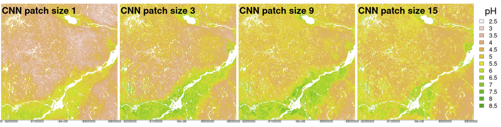
Externally, from the map user’s perspective:
- Soils are managed as units, not point-wise.
- Land-surface models often rely on 2D or 3D connectivity between grid cells.
- More than a century of fieldwork has shown that soils occur in more-or-less homogeneous patches of various sizes, not as isolated pedons (Boulaine, 1982; Fridland, 1974; Johnson, 1963).
- The map user may confuse artefacts of the mapping process with real soil patterns.
3 Setup
3.1 Packages
These R packages will be used in the analysis. They must be pre-installed.
3.2 Directories
Task: Set up the base directory.
This is on my system, change to wherever you want to store the sample files. Note that in Unix-alike systems the ~ symbol refers to the user’s home directory.
file.dir <- path.expand("~/ds_reference/Compare_DSM/")3.3 Example dataset: soil properties
The output of a DSM prediction can be saved as a GeoTiff (Open Geospatial Consortium, 2023).
Here we provide an example: (1x 1) tiles of the soil pH, measured in 1:1 soil:water ratio, over the 0-5 cm depth slice of an area in central NY State (USA):
- predictive map produced by the SoilGrids v2.0 project (Poggio et al., 2021);
- a rasterized gNATSGO (NRCS Soils, 2023) coverage of the same area, downscaled to match the SoilGrids v2.0 resolution.
(Further on we examine the effect of scale for the gNATSGO product, and the co-occurrence of two soil properties from SoilGrids v2.0)
You can download similar files as GeoTiff for an area of your preference; see the scripts gNATSGO_WCS_import.Rmd and SoilGrids v2.0_import.Rmd.
We process these in R with the terra package, which has the advantage that it only loads into computer memory as needed, and can load lower resolution automatically if that’s appropriate.
Task: Import these as terra::SpatRaster objects.
Of course, change the file names if you have downloaded different files (tile, property, and/or depth slice).
file.dir <- path.expand("~/ds_reference/Compare_DSM/")
(gn <- rast(paste0(file.dir, "gNATSGO/lat4243_lon-77-76/ph1to1h2o_r_05_250.tif")))class : SpatRaster
dimensions : 411, 410, 1 (nrow, ncol, nlyr)
resolution : 0.002434898, 0.002434898 (x, y)
extent : -76.99926, -76.00095, 41.99973, 43.00048 (xmin, xmax, ymin, ymax)
coord. ref. : lon/lat WGS 84 (EPSG:4326)
source : ph1to1h2o_r_05_250.tif
name : ph1to1h2o_r
min value : 4.60
max value : 7.62 (sg <- rast(paste0(file.dir, "SoilGrids250/lat4243_lon-77-76/phh2o_0-5cm_mean.tif")))class : SpatRaster
dimensions : 426, 426, 1 (nrow, ncol, nlyr)
resolution : 0.002349867, 0.002349867 (x, y)
extent : -77.00071, -75.99967, 41.99918, 43.00022 (xmin, xmax, ymin, ymax)
coord. ref. : lon/lat WGS 84 (EPSG:4326)
source : phh2o_0-5cm_mean.tif
name : phh2o_0-5cm_mean
min value : 43.11129
max value : 71.58004 The SoilGrids map is in units of ph x 10 (to store one decimal place as an integer), so we divide the values by 10 to match the gNATSGO product:
values(sg) <- values(sg)/10Task: Plot the two maps side-by-side, on the same value and colour scale.
range.sg.gn <- range(range(values(sg), na.rm = TRUE),
range(values(gn), na.rm = TRUE))
par(mfrow=c(1,2))
terra::plot(sg, main = "SoilGrids v2.0",
range = range.sg.gn, col=(sp::bpy.colors(50)))
terra::plot(gn, main = "gNATSGO",
range = range.sg.gn, col=(sp::bpy.colors(50)))
par(mfrow=c(1,1))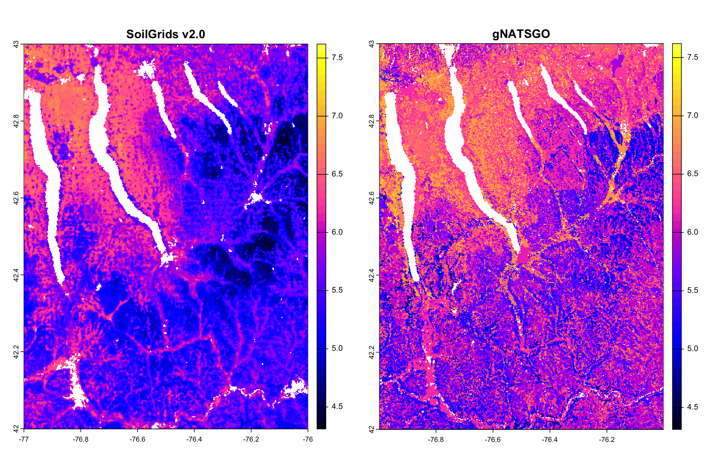
We see a wide range of values, especially in the SoilGrids map, and quite different patterns.
Q: Describe the principal differences between the two maps.
3.3.1 Crop to a smaller area
For quicker computation, we restrict the maps (1x 1) to a quarter-map (0.25x 0.25), centred to show some interesting patterns.
Task: Crop the two maps to a quarter-map.
test.tile.size <- 0.25 # degrees
test.tile.x.offset <- 0.2 # lrc west from right edge
test.tile.y.offset <- 0.3 # lrc north from bottom edge
ext.crop <- round(as.vector(ext(sg)),2) # line up to .00 decimal degrees
ext.crop["xmax"] <- ext.crop["xmax"] - test.tile.x.offset
ext.crop["xmin"] <- ext.crop["xmax"] - test.tile.size
ext.crop["ymin"] <- ext.crop["ymin"] + test.tile.y.offset
ext.crop["ymax"] <- ext.crop["ymin"] + test.tile.size
ext(ext.crop)SpatExtent : -76.45, -76.2, 42.3, 42.55 (xmin, xmax, ymin, ymax)gn <- crop(gn, ext(ext.crop));sg <- crop(sg, ext(ext.crop))
ext(gn)SpatExtent : -76.4489762279447, -76.2006165924792, 42.2992262003736, 42.550020734226 (xmin, xmax, ymin, ymax)ext(sg)SpatExtent : -76.450841145456, -76.1994053643854, 42.2999613764399, 42.5490472903977 (xmin, xmax, ymin, ymax)Notice that the two extents are not exactly the same because of the different alignments of the pixels in the sources.
Task: Plot the two quarter-tile maps side by side, with a common legend.
The value ranges are ifferent, so we need to set up a common scale for the visualization.
(range.sg <- range(values(sg), na.rm = TRUE))[1] 4.430727 6.386996(range.gn <- range(values(gn), na.rm = TRUE))[1] 4.80 7.53range.sg.gn <- range(range(values(sg), na.rm = TRUE),
range(values(gn), na.rm = TRUE))
par(mfrow=c(1,2))
plot(sg, main = "SoilGrids v2.0",
range = range.sg.gn, col=(sp::bpy.colors(50)))
plot(gn, main = "gNATSGO",
range = range.sg.gn, col=(sp::bpy.colors(50)))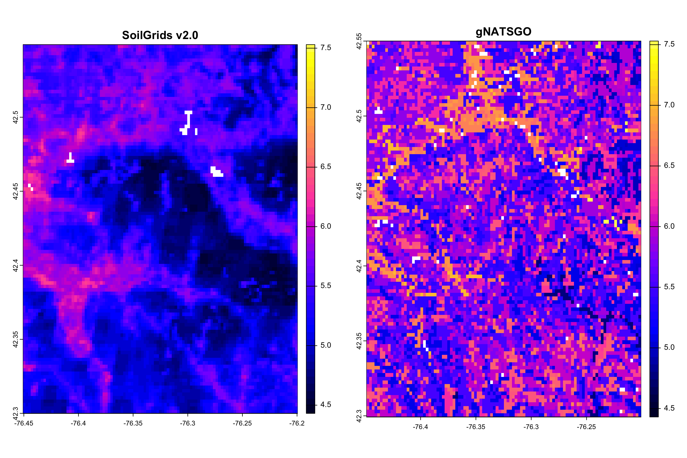
par(mfrow=c(1,1))Q: Describe the differences between the two quarter-maps, both the values and the patterns.
Q: Will the obvious difference in values affect the analysis of their patterns?
3.3.2 Transform to a metric CRS
Landscape metrics require approximately equal-area grid cells, so these maps, currently in a geographic Coördinate Reference System (CRS), must be projected to a metric system. A reasonable choice for any small areais the Universal Transmercator (UTM) system, which covers a 6-wide latitude range.
Task: Search for the appropriate EPSG code at the EPSG Geodetic Parameter Dataset, see (Figure 3).
Easiest is to use “Map Search” and further limit the results by the text “UTM”. Several datums can serve as the basis for the UTM CRS; for easiest conversion select WGS84. In the USA these have the format 326xx, where xx is the UTM zone number.
Determine the UTM zone and the corresponding EPSG code:
# a function to find the correct UTM zome
long2UTM <- function(long) { (floor((long + 180)/6) %% 60) + 1 }
# find the zone from the central meridian
utm.zone <- long2UTM(st_bbox(sg)$xmin +
0.5*(st_bbox(sg)$xmax - st_bbox(sg)$xmin))
cat(paste("UTM Zone", utm.zone))UTM Zone 18epsg.utm <- paste0("epsg:326", utm.zone)
cat(paste("CRS code:", epsg.utm))CRS code: epsg:32618Task: Resample the maps to the UTM projection, at nominal 250 m grid cell resolution.
Notes:
- The interpolation method used by
terra::projectis, by default, bilinear. This is appropriate for continuous-valued maps. - Specify the grid cell size with the
resargument toterra::project. Both maps were nominally at this scale, although presented in geographical coördinates. If this is omitted,terra::projectsets the size as a square with the smaller dimension, here at \(\approx 43^{0}N\) this is 229~m.
The bounding boxes and resolutions are slightly different for the two products.
st_bbox(gn) xmin ymin xmax ymax
-76.44898 42.29923 -76.20062 42.55002 res(gn)[1] 0.002434898 0.002434898gn.utm <- terra::project(gn, epsg.utm,
res = c(250, 250), method = "bilinear")
st_bbox(gn.utm) xmin ymin xmax ymax
380561.8 4683745.2 401561.8 4711745.2 res(gn.utm)[1] 250 250st_bbox(sg) xmin ymin xmax ymax
-76.45084 42.29996 -76.19941 42.54905 sg.utm <- terra::project(sg, epsg.utm,
res = c(250, 250), method = "bilinear")
st_bbox(sg.utm) xmin ymin xmax ymax
380409.5 4683779.9 401409.5 4711779.9 3.3.3 Harmonizing the mapped areas
The two maps have slightly different concepts of areas not mapped: unsurveyed urban areas and water bodies (both sources) and miscellaneous land types such as mines or gravel pits (gNATSGO). SoilGrids v2.0 identified these by remote sensing, whereas gNATSGO used field survey and (for urban areas) survey policy.
The maps also have slightly different extents. These must be made identical before masking. We select one map as a template and resample the other map into that template.
ext(gn.utm)SpatExtent : 380561.847574791, 401561.847574791, 4683745.2384707, 4711745.2384707 (xmin, xmax, ymin, ymax)ext(sg.utm)SpatExtent : 380409.511975787, 401409.511975787, 4683779.92513894, 4711779.92513894 (xmin, xmax, ymin, ymax)sg.utm <- resample(sg.utm, gn.utm)
ext(sg.utm)SpatExtent : 380561.847574791, 401561.847574791, 4683745.2384707, 4711745.2384707 (xmin, xmax, ymin, ymax)Notice the small changes in the range: the resampling has slightly lowered the extremes.
For the pattern analysis we want these NA areas to be the same. For this we use a reciprocal mask.
Task: mask each map with the NA areas of the other.
sg.utm <- mask(sg.utm, gn.utm)
# SoilGrids now has some `NA` added from gNATSGO
gn.utm <- mask(gn.utm, sg.utm)
# The added `NA` are already in gNATSGO, now it gets `NA` originally on SoilGridsTask: Plot the two maps side-by-side.
par(mfrow=c(1,2))
plot(sg.utm, main = "SoilGrids v2.0",
range = range.sg.gn, col=(sp::bpy.colors(50)))
plot(gn.utm, main = "gNATSGO",
range = range.sg.gn, col=(sp::bpy.colors(50)))
par(mfrow=c(1,1))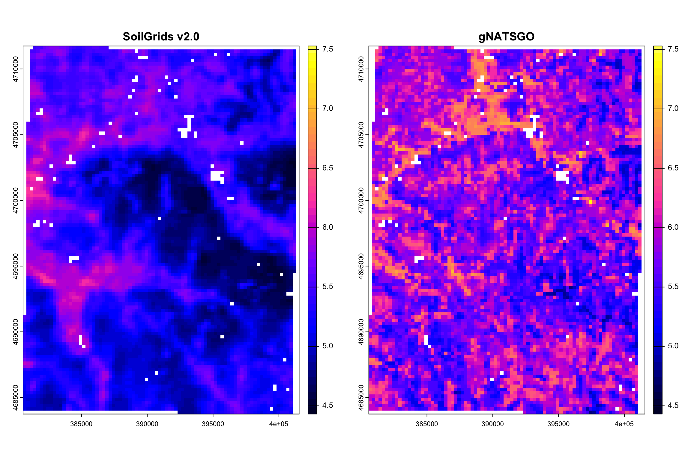
3.4 Example dataset: Soil survey map unit polygons
These will be used when examining the effects of scale in (Section 9) and (Section 10).
In the USA the polygon maps, as delineated by the soil surveyors and later digitized as vector GIS coverages, are available in the SSURGO and STATSGO databases. These can be accessed with the SDA_spatialQuery() function of the Soil Data Access (SDA) facility of the soilDB package written by NRCS scientists, to allow R access to the NRCS database’s REST/JSON web service. NCSS has written a tutorial on SDA1.
We specify the geomIntersection = TRUE argument to clip map unit polygons to the bounding polygon. The bounding box (in WGS84 geographic coordinates) and CRS must be obtained from a spatial object. For this we use SSURGO gridded map gn.utm, a terra::SpatRaster which we created above, as the template. This ensures that the same package is used for the returned object. Since this is a polygon map, it will be a terra::SpatVector object.
Task: Download the map unit polygons for the restricted study area. This may take a few minutes depending on how responsive is the remote server.
The bounding box is specified with the second argument to SDA_spatialQuery; here we have the quarter-degree products from the continuous DSM to serve as the CRS and bounding box. We use the gNATSGO SpatRaster (object gn) for this.
# get the polygons with their key
system.time(
mu.poly <- SDA_spatialQuery(gn,
what = "mupolygon",
db = "SSURGO",
geomIntersection = TRUE)
) user system elapsed
2.276 0.169 19.723 class(mu.poly)[1] "SpatVector"
attr(,"package")
[1] "terra"st_crs(mu.poly)$proj4string[1] "+proj=longlat +datum=WGS84 +no_defs"summary(mu.poly) mukey area_ac
Min. : 295575 Min. : 0.0022
1st Qu.: 295602 1st Qu.: 2.9416
Median : 295649 Median : 6.6646
Mean : 621141 Mean : 15.1426
3rd Qu.: 295687 3rd Qu.: 16.1199
Max. :2760841 Max. :897.0175 head(mu.poly)# plot with area in acres
plot(mu.poly, y = "area_ac",
type = "continuous",
main = "SSURGO map units, area in acres")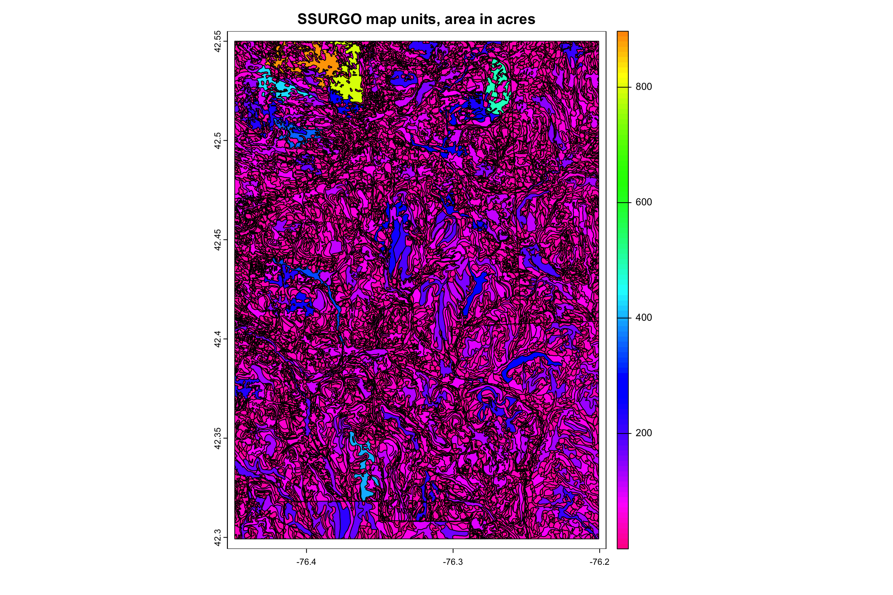
What do these map units codes represent? Find the map units from the same geometry.
mu.key <- SDA_spatialQuery(gn.utm,
what = "mukey",
db = "SSURGO",
geomIntersection = TRUE)
head(mu.key)These are named map units.
These have extended site data, which comes from the linked attribute database. For this we use an SQL query and the SDA_query (link to “Soil Data Access”) 2 function.
# format the list of map units for SQL
IS <- soilDB::format_SQL_in_statement(mu.poly$mukey)
# query string -- all components
ws <- sprintf("mukey IN %s", IS)
# format the SQL query
query <- paste("SELECT * FROM mapunit WHERE", ws)
# and run it
mu.info <- SDA_query(query)
dim(mu.info)[1] 217 26names(mu.info) [1] "musym" "muname" "mukind" "mustatus"
[5] "muacres" "mapunitlfw_l" "mapunitlfw_r" "mapunitlfw_h"
[9] "mapunitpfa_l" "mapunitpfa_r" "mapunitpfa_h" "farmlndcl"
[13] "muhelcl" "muwathelcl" "muwndhelcl" "interpfocus"
[17] "invesintens" "iacornsr" "nhiforsoigrp" "nhspiagr"
[21] "vtsepticsyscl" "mucertstat" "lkey" "mukey"
[25] "museq" "nationalmusym"series.name <- "Ovid" # look for a map unit by name
length(ix <- which(substr(mu.info$muname, 1,
nchar(series.name)) == series.name))[1] 2mu.info[ix, ]3.4.1 Transform to a metric CRS
Project to the metric CRS we are using in this area. The CRS was defined in the previous section.
st_crs(mu.poly)$proj4string[1] "+proj=longlat +datum=WGS84 +no_defs"mu.poly <- terra::project(mu.poly, epsg.utm)
st_crs(mu.poly)$proj4string[1] "+proj=utm +zone=18 +datum=WGS84 +units=m +no_defs"4 Characterizing patterns
Before comparing patterns of different maps, and trying to evaluate how close they are to “reality”, they first have to be characterized by statistical measures. This gives objective information about their spatial patterns.
The methods to characterize patterns are different for maps of continuous variables (Section 5) and classified (categorical) variables (Section 6).
5 Characterizing patterns – Continuous
These are methods that require continuous values on at least an interval scale, and usually a ratio scale (with a true zero). In the case of the example here, pH does not have a true zero, so it is an interval scale. Other properties such as soil thickness to a restricting layer have a true zero, and one can speak of one location being “twice as thick” than another, for example.
5.1 The global variogram
The variogram (or a correlogram) can be used to characterize the degree of spatial continuity and the “roughness” of a continuous property map, averaged across the entire map. Note that this depends on the grid cell size in two ways:
- Any pattern at finer resolutions has been removed;
- The values in grid cells may be produced by punctual or block methods. Block methods smooth values, so that the variogram sill will necessarily be lower than for punctual predictions. Also, the range may be longer.
In this section we compute and compare the short-range variograms, these reveal the local structure. In DSM maps the variogram is typically unbounded, but we don’t care about the long-range structure when we are evaluating patterns. The parameters of the local structure characterize the fine-scale variability.
Note: Variograms are typically produced separately for each mapped soil property. To characterize an inherent landscape scale, a number of properties can be combined by principal component analysis (PCA) and the first component (PC1) can be characterized.
Task: Convert the terra::SpatRaster objects to raster::raster and then to sf:sf objects in order to compute variograms.
Note: There is (so far) no direct conversion. The gstat::variogram method must be applied to an object of class sp or sf, not directly to a terra::SpatRaster.
gn.sp <- as(raster(gn.utm), "SpatialPointsDataFrame")
gn.sf <- st_as_sf(gn.sp)
names(gn.sf)[1] "ph1to1h2o_r" "geometry" sg.sp <- as(raster(sg.utm), "SpatialPointsDataFrame")
sg.sf <- st_as_sf(sg.sp)
names(sg.sf)[1] "phh2o_0.5cm_mean" "geometry" Task: Set the initial parameters for empirical variogram as the resolution.
If the bin width is the resolution, we get one-grid-cell spatial correlations.
range.init <- 1000 # estimated range, m
cutoff.init <- range.init*5 # cutoff for empirical variogram, m
width.init <- 250 # bin widthTask: Compute and display the empirical variograms.
v.sg <- variogram(phh2o_0.5cm_mean ~ 1, loc = sg.sf,
cutoff=cutoff.init, width=width.init)
#
v.gn <- gstat::variogram(ph1to1h2o_r ~ 1, loc = gn.sf,
cutoff=cutoff.init, width=width.init)
ylim.v <- max(v.gn$gamma, v.sg$gamma)
p1 <- plot(v.sg, ylim = c(0, ylim.v), main = "SoilGrids v2.0")
p2 <- plot(v.gn, ylim = c(0, ylim.v), main = "gNATSGO")
grid.arrange(p1, p2, nrow = 1)
Q: Describe the empirical differences in spatial structure of the two maps.
Task: Fit a variogram model to the empirical variogram.
The differences can be quantified by the parameters of a fitted variogram model. We try an exponential model because (1) it has the simplest theory, and (2) we expect to not reach a sill within the short range investigated.
We use the fit.variogram method to adjust an initial estimate by weighted least squared. The estimated sill is the maximum \(\gamma\) in the empirical variogram.
vm.gn <- vgm(0.8*max(v.gn$gamma), "Exp", range.init, 0)
(vmf.gn <- fit.variogram(v.gn, model=vm.gn))vm.sg <- vgm(0.8*max(v.sg$gamma), "Exp", range.init, 0)
(vmf.sg <- fit.variogram(v.sg, model=vm.sg))p1 <- plot(v.sg, model=vmf.sg, ylim = c(0, ylim.v), main = "SoilGrids v2.0",
xlab = "separation m", ylab = expression(paste(Delta, plain(pH)^2)))
p2 <- plot(v.gn, model=vmf.gn, ylim = c(0, ylim.v), main = "gNATSGO",
xlab = "separation m", ylab = expression(paste(Delta, plain(pH)^2)))
grid.arrange(p1, p2, nrow = 1)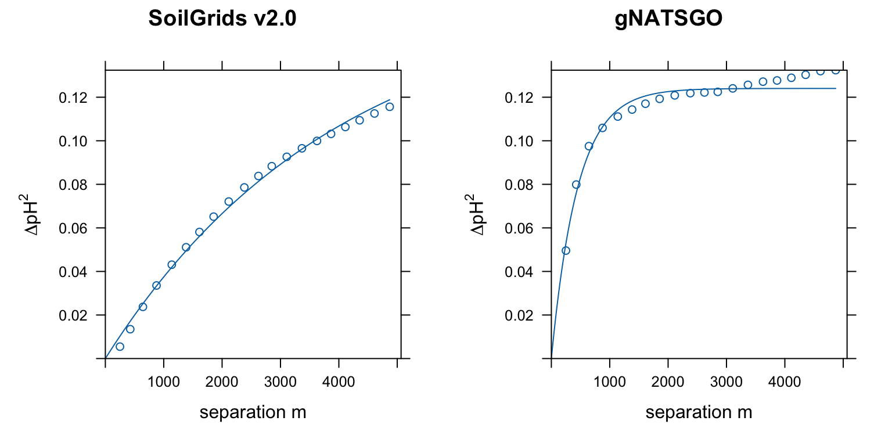
Q: How well do the fitted models match the empirical variograms? If the fit has some problems, what could be a solution?
Q: Describe the modelled differences in spatial structure of the two maps (total sill, range).
Q: What is the implication for the utility of the maps?
Q: Is there any way to decide which is “better” in some sense?
5.2 Moving-window local association
The local spatial structure may not be consistent across the mapped area, so that the average variogram, computed over that area, can be misleading. With so many values (grid cells) it’s possible to compute moving-window variograms, as in the VESPER program (Minasny et al., 2005) developed for precision agriculture applications. This will show if the pattern is consistent across the map, and also allow maps to be compared block-by-block. I have not (yet?) implemented this in R, so we will use another method to assess moving-window local spatial association.
A quick way to see the local degree of autocorrelation is with Moran’s I applied to a window of appropriate size around each grid cell, using the terra::autocor function.
Moran’s I is defined as:
\[ I = \frac{n}{\sum_i \sum_j w_{ij}} \frac{\sum_i \sum_j w_{ij}(y_i - \bar{y})(y_j - \bar{y})}{\sum_i (y_i - \bar{y})^2}\]
where \(y_i\) is the value of the variable in the \(i\)th of \(n\) neighbouring grid cells, \(\bar{y}\) is the global mean of the variable, \(w_{ij}\) is the spatial of the link between the target cell \(i\) and its neighbour cell \(j\). The expected value of Moran’s I is \(-1/(n-1)\) if the pattern of the response variable is random, i.e., no spatial correlation. So for a 5x5 neighbourhood the expected value if random is \(-1/24 = -0.041\bar{6} \approx 0\).
The second term numerator is the weighted covariance; its denominator normalizes by the variance. The first term normalizes by the sum of all weights, so that the test is comparable among tests with different numbers of neighbours and using different weightings.
Task: Construct a weights matrix for local Moran’s I
We determine the weights matrix for Moran’s I from the global variogram analysis and the grid cell size.
# for a 5x5 matrix
# there must be a more elegant way to do this!
(vl <- variogramLine(vm.sg,
dist_vector = c(250, 250*sqrt(2),
500, 250*sqrt(5),
500*sqrt(2))))(w.r <- 1/(vl$gamma / vl$gamma[1])) # relative weights[1] 1.0000000 0.7427491 0.5621765 0.5165440 0.4363495(w.m <- matrix(c(w.r[5], w.r[4], w.r[3], w.r[4], w.r[5],
w.r[5], w.r[2], w.r[1], w.r[2], w.r[5],
w.r[3], w.r[1], 0, w.r[1], w.r[3],
w.r[5], w.r[2], w.r[1], w.r[2], w.r[5],
w.r[5], w.r[4], w.r[3], w.r[4], w.r[5]),
nrow = 5, ncol = 5)) [,1] [,2] [,3] [,4] [,5]
[1,] 0.4363495 0.4363495 0.5621765 0.4363495 0.4363495
[2,] 0.5165440 0.7427491 1.0000000 0.7427491 0.5165440
[3,] 0.5621765 1.0000000 0.0000000 1.0000000 0.5621765
[4,] 0.5165440 0.7427491 1.0000000 0.7427491 0.5165440
[5,] 0.4363495 0.4363495 0.5621765 0.4363495 0.4363495Task: Compute and display the moving-window autocorrelation.
This uses the terra::autocor method, applied to a weighted window.
sg.utm.autocor <- terra::autocor(sg.utm, w=w.m,
method="moran", global = FALSE)
gn.utm.autocor <- terra::autocor(gn.utm, w=w.m,
method="moran", global = FALSE)
(range.sg.autocor <- range(values(sg.utm.autocor), na.rm = TRUE))[1] -0.2621647 6.2650773(range.gn.autocor <- range(values(gn.utm.autocor), na.rm = TRUE))[1] -1.937685 6.388628range.autocor <- range(range.sg.autocor, range.gn.autocor)
# hcl.pals(type = "diverging")
par(mfrow=c(1,2))
terra::plot(sg.utm.autocor, main = "SG250, Moran's I, 5x5",
range = range.autocor, col = rev(hcl.colors(32, palette = "RdYlGn")))
terra::plot(gn.utm.autocor, main = "gNATSGO, Moran's I, 5x5",
range = range.autocor, col = rev(hcl.colors(32, palette = "RdYlGn")))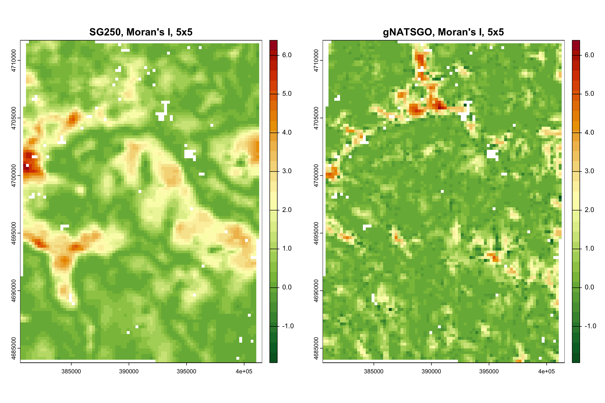
par(mfrow=c(1,1))To appreciate the local Moran’s I values, here are the global Moran’s I with the same weights matrix. These are the averages of all the local (window) Moran’s I.
terra::autocor(sg.utm, w=w.m, method="moran", global = TRUE)phh2o_0-5cm_mean
1.083992 terra::autocor(gn.utm, w=w.m, method="moran", global = TRUE)ph1to1h2o_r
0.5343023 These are both very far from the random value \(-0.041\bar{6}\). Both maps show hot spots with much larger local autocorrelation, and some areas with almost none or even more dispersed than random (negative values).
Q: Is the pattern of local autocorrelation the same across the map?
Q: Which map has larger differences?
6 Characterizing patterns – Classified
The spatial unit of conventional (legacy) maps is the polygon, not the grid cell. These maps show a discrete number of legend entries (classes), each with one to many polygons. In the soil survey context these are called mapping units, and generally are soil classes, possibly with some landscape features (e.g., erosion class, slope class) as part of the definition. Some mapping units may represent water bodies and various other kinds of non-soil.
Figure 5 shows a typical polygon map from a legacy “land condition” survey (Soil Conservation Service, 1951). All polygons with the same label (e.g., “337D22”) refer to a single mapping unit, in this case composed of an erosion class, slope class, and soil type.
It’s easiest to work with maps already in digital format. The area of the legacy map has been updated and digitized, see Figure 6. These polygons can be downloaded in various GIS formats, see Section 3.4, above
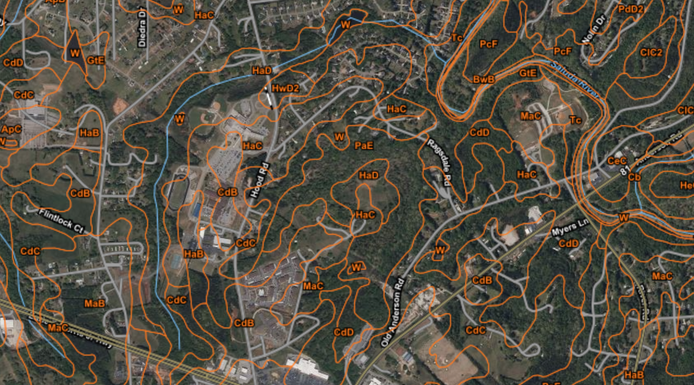
But here we continue with the continuous property maps of a single property. To use these techniques on continuous property maps, the maps must be sliced (discretized) into classes. There are several choices:
- meaningful limits, matching some thresholds known to be important for a soil function;
- equal intervals;
- histogram equalization.
For equal intervals or histogram equalization, the cutpoints should be the same for all maps, and therefore derived from their combined distribution of values. We illustrate the process here, but do not use it for the landscape metrics examples later on in the tutorial.
6.1 Classifying by histogram equalization
This section shows how to classify by histogram equalization; the results will not be used later in the tutorial. Instead, we will use meaningful limits (see Section 6.2) to slice the map.
Task: Slice the two maps by histogram equalization
First, compute the histogram equalization and display the limits on a histogram plot:
n.class <- 8
# combined values
values.all <- c(values(gn.utm),
values(sg.utm))
values.all.sort <- sort(values.all)
#
n <- length(values.all) - sum(is.na(values.all))
(cut.positions <- round(n/n.class))[1] 2237(cuts <- values.all.sort[cut.positions * 1:(n.class-1)])[1] 4.969114 5.210513 5.425628 5.573456 5.721922 5.874367 6.078163hist(values.all, breaks=36, main="Histogram equalization",
xlab = "pH")
abline(v=cuts, col="blue", lwd=2)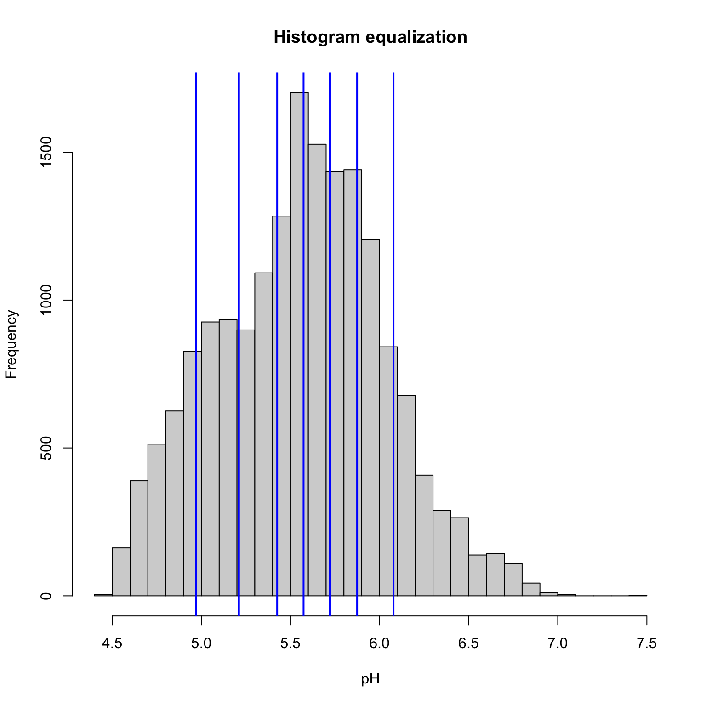
Q: How well do these represent the distributions on the two maps individually?
To answer this, compare their histograms with the equalization slices.
par(mfrow=c(1,2))
hist(values(gn.utm), breaks=36, main="gNATSGO",
xlab = "pH")
abline(v=cuts, col="blue", lwd=2)
hist(values(sg.utm), breaks=36, main="SoilGrids v2.0",
xlab = "pH")
abline(v=cuts, col="blue", lwd=2)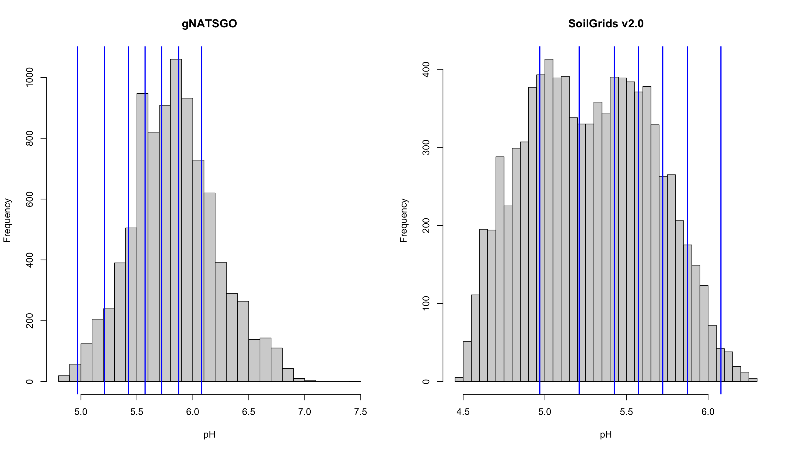
par(mfrow=c(1,1))Task: slice the maps and display with a common colour ramp.
Find the cutpoints and set up the colour ramp:
(zlim <- c(min(values.all, na.rm = TRUE),
max(values.all, na.rm=TRUE)))[1] 4.462665 7.404359(cut.names <- cut(zlim, breaks=c(zlim[1], cuts, zlim[2]),
ordered_result=TRUE, include.lowest = TRUE)) [1] [4.46,4.97] (6.08,7.4]
8 Levels: [4.46,4.97] < (4.97,5.21] < (5.21,5.43] < ... < (6.08,7.4]# make sure lowest value is included
#
# common colour ramp
color.ramp <- bpy.colors(n.class+1)
#
(cuts <- round(c(zlim[1], cuts, zlim[2]),2))[1] 4.46 4.97 5.21 5.43 5.57 5.72 5.87 6.08 7.40Slice the maps:
gn.class <- terra::classify(gn.utm, rcl= cuts)
# gn.class <- as.factor(gn.class)
table(values(gn.class))
0 1 2 3 4 5 6 7
38 387 775 1057 1216 1507 1828 2138 names(gn.class) <- "class"
sg.class <- terra::classify(sg.utm, rcl= cuts)
table(values(sg.class))
0 1 2 3 4 5 6 7
2205 1839 1524 1065 1058 692 481 83 names(sg.class) <- "class"Display the maps:
par(mfrow=c(1, 2))
.l <- range(values(gn.class), na.rm=TRUE)
terra::plot(gn.class,
col=color.ramp[.l[1]:.l[2]+1], type="classes",
main="gNATSGO")
.l <- range(values(sg.class), na.rm=TRUE)
terra::plot(sg.class,
col=color.ramp[.l[1]:.l[2]+1], type="classes",
main="SG2")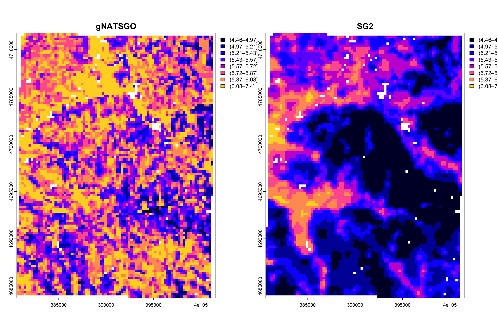
par(mfrow=c(1,1))Q: Describe the patterns of the two maps
Q: How would these change with different class numbers or limits?
Q: If classifying by histogram equalization, should the two maps be compared with the same limits or each with their own limits? You are welcome to experiment.
6.2 Classifying by meaningful limits
For soil properties we usually have limits that correspond to approximate thresholds in land use. In the case of pH, we can refer to extension or crop consultant publications, or environmental models. Unlike in histogram equalization, the number of classes depends on the user requirements.
For example, the Cornell pH test kit has a “Wide Range Kit” measuring the soil pH over the range of 4.0–8.6, in increments of 0.2 for an experienced user. So, here we will slice the map in increments of 0.2 pH.
Task: slice the maps and display with a common colour ramp.
Find the combined range and divide into one-decimal classes of 0.2 pH, starting and ending on even units of 0.2.
range.all <- range(values(gn.utm),
values(sg.utm),
na.rm = TRUE)
lim.low <- floor(10*range.all[1])/10
lim.low <- ifelse((lim.low %% .2) != 0, lim.low - 0.1, lim.low)
lim.high <- ceiling(10*range.all[2])/10
lim.high <- ifelse((lim.high %% .2) != 0, lim.high + 0.1, lim.high)
(cuts <- seq(lim.low, lim.high, by = 0.2)) [1] 4.4 4.6 4.8 5.0 5.2 5.4 5.6 5.8 6.0 6.2 6.4 6.6 6.8 7.0 7.2 7.4 7.6Slice the maps:
gn.class <- terra::classify(gn.utm, rcl= cuts)
# gn.class <- as.factor(gn.class)
table(values(gn.class))
2 3 4 5 6 7 8 9 10 11 12 13 15
76 329 629 1452 1727 1992 1348 681 402 253 53 4 1 names(gn.class) <- "class"
sg.class <- terra::classify(sg.utm, rcl= cuts)
table(values(sg.class))
0 1 2 3 4 5 6 7 8 9
167 902 1376 1531 1362 1534 1235 653 171 16 names(sg.class) <- "class"Display them:
par(mfrow=c(1, 2))
color.ramp <- bpy.colors(length(cuts))
.l <- range(values(gn.class), na.rm=TRUE)
terra::plot(gn.class,
col=color.ramp[.l[1]:.l[2]+1], type="classes",
main="gNATSGO pH 0.2 units")
.l <- range(values(sg.class), na.rm=TRUE)
terra::plot(sg.class,
col=color.ramp[.l[1]:.l[2]+1], type="classes",
main="SG2 pH 0.2 units")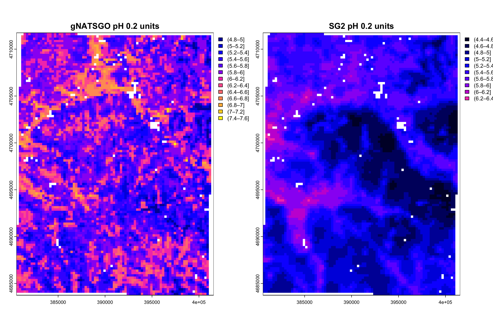
par(mfrow=c(1,1))These maps are now showing meaningful landscape units, from the point of view of land use and soil processes, on the same scale.
Q: Describe the patterns of the two maps
Q: How would these maps change with wider or narrower class intervals? You are welcome to experiment!
6.3 Co-occurrence matrices
One question for a classified map is which classes tend to be adjacent to each other. In the case of the pH map, we might expect adjacent classes to be in the pH sequence, but maybe not – there may be abrupt transitions of parent materials, for example.
A co-occurrence matrix counts all the pairs of adjacent cells for each category in a local landscape, as a cross-classification matrix.
Task: Compute the co-occurrence matrices, using Queen’s Case neighbours (i.e., diagonal links are considered).
Co-occurrence vectors are computed with the lsp_signature function of the motif package, specifyin coma = co-occurrence matrix as the signature.
coma.gn <- lsp_signature(gn.class, type="coma", neighbourhood = 8)
print(coma.gn.matrix <- as.matrix(coma.gn$signature)[[1]]) 3 4 5 6 7 8 9 10 11 12 13 14 16
3 148 132 103 76 52 38 13 10 0 0 0 0 0
4 132 608 547 539 368 233 79 30 7 0 0 0 0
5 103 547 1110 1316 893 571 214 114 35 7 0 0 0
6 76 539 1316 3780 2651 1647 784 338 155 61 8 2 0
7 52 368 893 2651 3560 3337 1613 662 274 95 9 8 0
8 38 233 571 1647 3337 5224 2902 1018 470 156 33 8 2
9 13 79 214 784 1613 2902 2764 1210 670 234 41 2 1
10 10 30 114 338 662 1018 1210 948 585 295 63 2 2
11 0 7 35 155 274 470 670 585 522 326 46 5 2
12 0 0 7 61 95 156 234 295 326 642 122 2 1
13 0 0 0 8 9 33 41 63 46 122 78 1 0
14 0 0 0 2 8 8 2 2 5 2 1 2 0
16 0 0 0 0 0 2 1 2 2 1 0 0 0sum(diag(coma.gn.matrix))/sum(coma.gn.matrix)[1] 0.277633coma.sg <- lsp_signature(sg.class, type="coma", neighbourhood = 8)
print(coma.sg.matrix <- as.matrix(coma.sg$signature)[[1]]) 1 2 3 4 5 6 7 8 9 10
1 904 376 14 0 0 0 0 0 0 0
2 376 5330 1269 139 18 0 0 0 0 0
3 14 1269 7088 2222 287 18 0 0 0 0
4 0 139 2222 6912 2400 378 19 0 0 0
5 0 18 287 2400 5008 2570 284 17 0 0
6 0 0 18 378 2570 6330 2396 118 6 0
7 0 0 0 19 284 2396 5616 1192 45 0
8 0 0 0 0 17 118 1192 3262 464 2
9 0 0 0 0 0 6 45 464 714 79
10 0 0 0 0 0 0 0 2 79 36sum(diag(coma.sg.matrix))/sum(coma.sg.matrix)[1] 0.5900381Q: Describe the differences in the co-occurrence structure. What does this imply for the spatial pattern?
We see that indeed in this case most adjacencies are within one or at most two classes. The gNATSGO map has more multiple-class adjacencies than does SoilGrids, due to its finer spatial pattern. The SoilGrids map has well over half of the adjacencies in the same class, whereas gNATSGO has about a quarter.
6.4 Co-occurrence vectors
The Co-occurrence vector “COVE” proposed by Nowosad & Stepinski (2018a) summarizes the entire adjacency structure of a map and can be used to compare map structures. This is a normalized form of the co-occurrence matrix (see the previous section). Normalization means the matrix sums to 1, and so is independent of the number of grid cells in the map. Therefore this vector can be considered as a probability vector for the co-occurrence of different classes.
Task: Compute the co-occurrence vectors, using Queen’s Case neighbours.
Co-occurrence vectors are computed with the lsp_signature function of the motif package, specifying cove (normalized co-occurrence vector) as the signature. These will be used to compare the maps, below.
# normalized co-occurence vector 8 x 8
cove.gn <- lsp_signature(gn.class, type="cove", neighbourhood = 8)
cove.sg <- lsp_signature(sg.class, type="cove", neighbourhood = 8)6.5 Integrated co-occurrence vector
An integrated co-occurrence vector considers several input layers, for example, representing different soil properties of the same area.
To examine this we need another soil property map. Let’s use SG2 silt of the 0–5~cm layer. We process this as we did for the pH map. Here the “meaningful limits” for silt content are 5% intervals. Since the SG2 map is expressed in \(\mathrm{g} \; \mathrm{kg}^{-1}\), these are intervals of 50 \(\mathrm{g} \; \mathrm{kg}^{-1}\).
Task: Import and process the silt concentration 0-5 cm SoilGrids product.
(sg.silt <- rast(paste0(file.dir,
"SoilGrids250/lat4243_lon-77-76/silt_0-5cm_mean.tif")))class : SpatRaster
dimensions : 426, 426, 1 (nrow, ncol, nlyr)
resolution : 0.002349867, 0.002349867 (x, y)
extent : -77.00071, -75.99967, 41.99918, 43.00022 (xmin, xmax, ymin, ymax)
coord. ref. : lon/lat WGS 84 (EPSG:4326)
source : silt_0-5cm_mean.tif
name : silt_0-5cm_mean
min value : 0.0000
max value : 752.4755 sg.silt <- crop(sg.silt, ext(ext.crop))
values(sg.silt) <- values(sg.silt)/10 # convert from ppt to %
sg.silt.utm <- terra::project(sg.silt, epsg.utm,
res = c(250, 250), method = "bilinear")
sg.silt.utm <- resample(sg.silt.utm, sg.utm) # make extents identical
cuts <- seq(10, 90, by = 5)
sg.silt.class <- terra::classify(sg.silt.utm, rcl= cuts)
table(values(sg.silt.class))
0 1 2 3 4 5 6 7 8 9 10
2 1 5 12 11 12 166 2254 5330 1331 2 names(sg.silt.class) <- "class"
plot(sg.silt.class, col = topo.colors(11))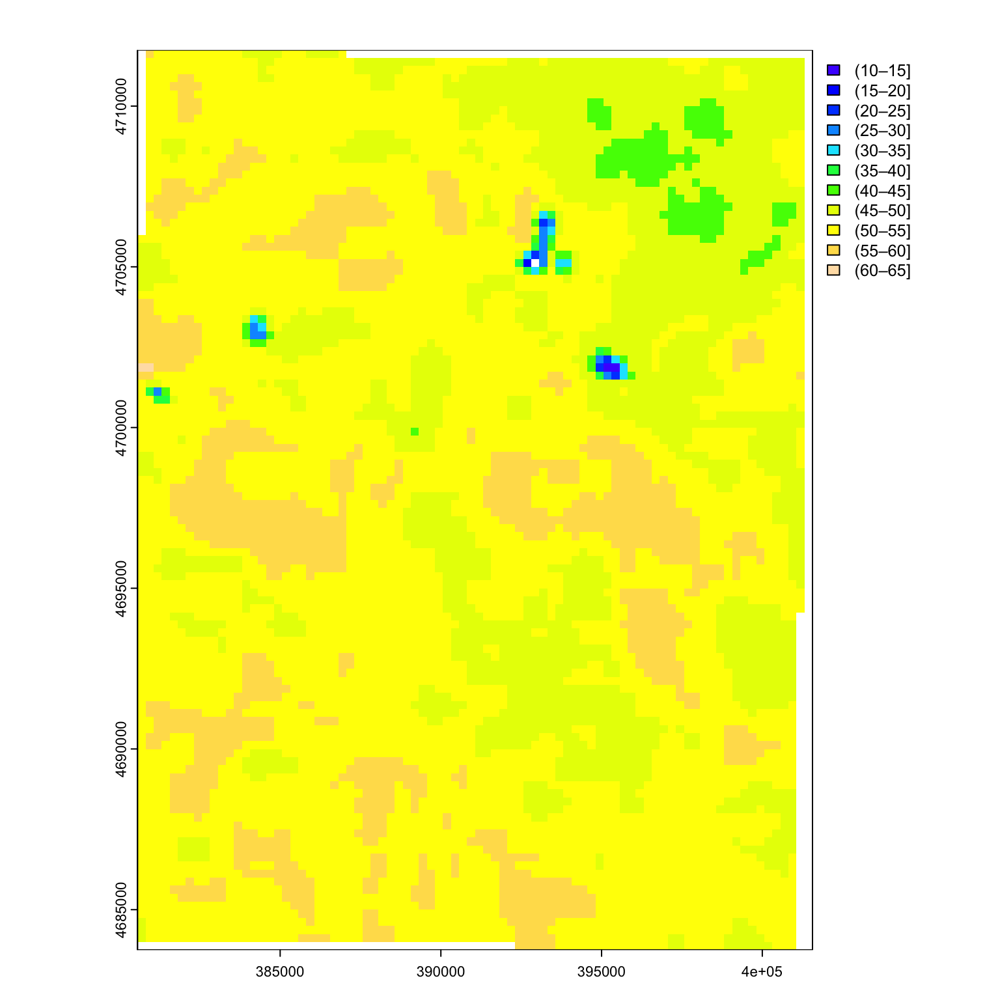
This map has much larger homogeneous areas than the SG2 pH map.
Examine this single map’s co-occurrence matrix and vector:
#|.label: coma-cove
coma.sg.silt <- lsp_signature(sg.silt.class, type="coma", neighbourhood = 8)
print(coma.sg.silt.matrix <- as.matrix(coma.sg.silt$signature)[[1]]) 1 2 3 4 5 6 7 8 9 10 11
1 2 0 5 3 4 1 1 0 0 0 0
2 0 0 1 0 2 2 0 2 0 0 0
3 5 1 2 9 6 4 4 7 1 0 0
4 3 0 9 16 9 13 21 20 3 0 0
5 4 2 6 9 8 9 15 24 9 0 0
6 1 2 4 13 9 6 8 25 26 1 0
7 1 0 4 21 15 8 828 416 29 5 0
8 0 2 7 20 24 25 416 14128 3024 10 0
9 0 0 1 3 9 26 29 3024 36196 2651 1
10 0 0 0 0 0 1 5 10 2651 7892 10
11 0 0 0 0 0 0 0 0 1 10 2sum(diag(coma.sg.silt.matrix))/sum(coma.sg.silt.matrix)[1] 0.8223602cove.sg.silt <- lsp_signature(sg.silt.class, type="cove", neighbourhood = 8)Most of the adjacencies are to the same class, or the adjacent class.
Task: Compute the distance between the co-occurrence vectors for pH and silt:
cove.df <- data.frame(cove.sg)$signature[[1]][1,]
cove.df <- rbind(cove.df, cove.sg.silt$signature[[1]][1,])
cove.dists <- round(
philentropy::distance(cove.df, method = "jensen-shannon",
use.row.names =TRUE,
as.dist.obj = FALSE,
diag = FALSE) ,4)
print(cove.dists)jensen-shannon
0.6811 This is a much larger distance than that between SG2 and gNATSGO pH maps co-occurrence vectors.
6.5.1 Clustering pattern differences
Once a pattern metric is shown across a map, a natural question is whether different areas of the map have different patterns. We illustrate this with the pattern of the integrated co-occurrence vectors.
Any size window can be used. If too small the result is erratic, if too large, local differences may be missed.
Task: Identify which parts of the SG2 map have similar integrated co-occurrence pattern differences, considering both properties. For this we use 4 x 4 km windows, i.e., 16 x 16 grid cells.
Again we use lsp_signature, type "incove", but now specifying a window size within which to compute the pattern.
sg.ph.silt.class <- c(sg.class, sg.silt.class)
incove.sg <- lsp_signature(sg.ph.silt.class,
type = "incove",
neighbourhood = 8,
ordered = TRUE, # the pH classes are ordered
window = 16,
normalization = "pdf") #sum to one
summary(incove.sg.dist <- lsp_to_dist(incove.sg,
dist_fun = "jensen-shannon")) Min. 1st Qu. Median Mean 3rd Qu. Max.
0.04654 0.28386 0.42389 0.43529 0.59139 0.92259 dim(incove.sg.dist)[1] 42 42Here we have defined 42 x 42 distances, i.e., paired distances between each of the windows’ signatures.
Are any of these distances similar? Let’s see with a cluster analysis.
Task: Make a hierarchical clustering of the distances between the integrated co-occurrence vectors of the 42 windows.
The hclust function can cluster using many methods to build the dendrogram. Here we use Ward’s D2 method, which aims at finding compact, spherical clusters.
sg.hclust <- hclust(incove.sg.dist, method = "ward.D2")
plot(sg.hclust, main = "clusters of distance between `incove`")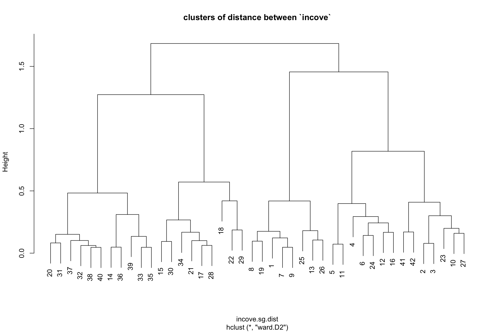
Task: Define classes of similar distances by cutting the dendrogram.
Examining the dendrogram, it seems that height h = 0.5 is a good cutting point, which captures the main differences. Alternatively, a set number of clusters can be requested with the k argument.
sg.clusters <- as.factor(cutree(sg.hclust, h = 0.5)) # cutpoint by visual inspection
levels(sg.clusters)[1] "1" "2" "3" "4" "5" "6"sg.grid.sf = lsp_add_clusters(incove.sg, sg.clusters)
sg.grid.sf$clust <- as.factor(sg.grid.sf$clust)
my.pal <- colorRampPalette(brewer.pal(8, "Accent"))(length(levels(sg.grid.sf$clust)))
ggplot(data = sg.grid.sf) +
geom_sf(aes(fill = clust), alpha = 0.7) +
scale_fill_discrete(type = my.pal) +
labs(title = "Clusters: distance between integrated co-occurrence vectors",
fill = "cluster")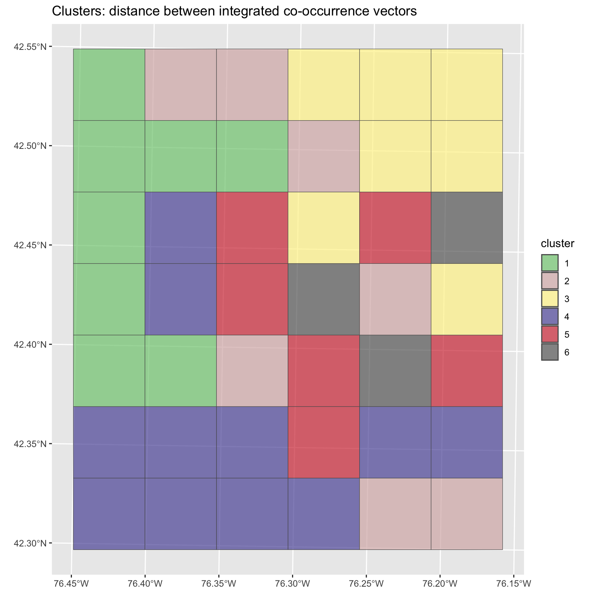
This shows which areas of the map have similar integrated co-occurrence patterns. These can be interpreted as similar soils, in the sense that the sum of propertied defines a soil type.
Compare this to a visual inspection of the patterns, next to the 7 x 6 cluster grid.
p1 <- ggplot(data = sg.grid.sf) +
geom_sf(aes(fill = clust), alpha = 0.7) +
scale_fill_discrete(type = my.pal) +
labs(fill = "cluster") +
theme(legend.position="none")
p2 <- ggplot() +
tidyterra::geom_spatraster(data = sg.class, aes(fill = class)) +
theme(legend.position="none")
p3 <- ggplot() +
tidyterra::geom_spatraster(data = sg.silt.class, aes(fill = class)) +
theme(legend.position="none")
gridExtra::grid.arrange(p1, p2, p3, nrow=1)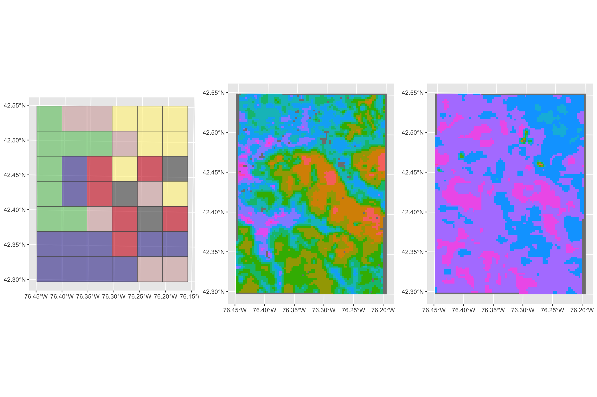
Careful examination reveals that the cluster in the NW corner corresponds to an intricate pattern of pH and mostly one class of silt concentration.
6.6 Landscape metrics
Landscape metrics have a long history of use in landscape ecology (Uuemaa et al., 2013). A wide variety have been collected in the well-known FRAGSTATS computer program (McGarigal et al., 2012). These have been implemented in the R context by the package3 (Hesselbarth et al., 2019; Hesselbarth, 2021). Although the ecological relevance of FRAGSTATS metrics have been criticized (Kupfer, 2012), here we use them to characterize spatial patterns of soil properties or classes, not as inputs to landscape ecology models.
The patterns of soil classes or properties are not expected to have the same characteristics as those for land cover or vegetation types. Land cover is largely controlled by humans, and where it is not, vegetation is mostly placed on the landscape by different mechanisms than are soils. There is a link, however: if the soil property is largely controlled by the o (organism) or h (human) factor, then the patterns on the landscape could be similar to those under it.
There are many metrics, of three levels of detail. We list them here for reference; each has its own help text.
First, the patch-level metrics. These describe every patch, i.e., contiguous cells belonging to the same class.
landscapemetrics::list_lsm(level="patch") %>% print(n=Inf)# A tibble: 12 × 5
metric name type level function_name
<chr> <chr> <chr> <chr> <chr>
1 area patch area area and edge… patch lsm_p_area
2 cai core area index core area met… patch lsm_p_cai
3 circle related circumscribing circle shape metric patch lsm_p_circle
4 contig contiguity index shape metric patch lsm_p_contig
5 core core area core area met… patch lsm_p_core
6 enn euclidean nearest neighbor distance aggregation m… patch lsm_p_enn
7 frac fractal dimension index shape metric patch lsm_p_frac
8 gyrate radius of gyration area and edge… patch lsm_p_gyrate
9 ncore number of core areas core area met… patch lsm_p_ncore
10 para perimeter-area ratio shape metric patch lsm_p_para
11 perim patch perimeter area and edge… patch lsm_p_perim
12 shape shape index shape metric patch lsm_p_shape Second, the class-level metrics. These describe all patches belonging to a specified class.
landscapemetrics::list_lsm(level="class") %>% print(n=Inf)# A tibble: 55 × 5
metric name type level function_name
<chr> <chr> <chr> <chr> <chr>
1 ai aggregation index aggregat… class lsm_c_ai
2 area_cv patch area area and… class lsm_c_area_cv
3 area_mn patch area area and… class lsm_c_area_mn
4 area_sd patch area area and… class lsm_c_area_sd
5 ca total (class) area area and… class lsm_c_ca
6 cai_cv core area index core are… class lsm_c_cai_cv
7 cai_mn core area index core are… class lsm_c_cai_mn
8 cai_sd core area index core are… class lsm_c_cai_sd
9 circle_cv related circumscribing circle shape me… class lsm_c_circle…
10 circle_mn related circumscribing circle shape me… class lsm_c_circle…
11 circle_sd related circumscribing circle shape me… class lsm_c_circle…
12 clumpy clumpiness index aggregat… class lsm_c_clumpy
13 cohesion patch cohesion index aggregat… class lsm_c_cohesi…
14 contig_cv contiguity index shape me… class lsm_c_contig…
15 contig_mn contiguity index shape me… class lsm_c_contig…
16 contig_sd contiguity index shape me… class lsm_c_contig…
17 core_cv core area core are… class lsm_c_core_cv
18 core_mn core area core are… class lsm_c_core_mn
19 core_sd core area core are… class lsm_c_core_sd
20 cpland core area percentage of landscape core are… class lsm_c_cpland
21 dcad disjunct core area density core are… class lsm_c_dcad
22 dcore_cv disjunct core area core are… class lsm_c_dcore_…
23 dcore_mn disjunct core area core are… class lsm_c_dcore_…
24 dcore_sd disjunct core area core are… class lsm_c_dcore_…
25 division division index aggregat… class lsm_c_divisi…
26 ed edge density area and… class lsm_c_ed
27 enn_cv euclidean nearest neighbor distance aggregat… class lsm_c_enn_cv
28 enn_mn euclidean nearest neighbor distance aggregat… class lsm_c_enn_mn
29 enn_sd euclidean nearest neighbor distance aggregat… class lsm_c_enn_sd
30 frac_cv fractal dimension index shape me… class lsm_c_frac_cv
31 frac_mn fractal dimension index shape me… class lsm_c_frac_mn
32 frac_sd fractal dimension index shape me… class lsm_c_frac_sd
33 gyrate_cv radius of gyration area and… class lsm_c_gyrate…
34 gyrate_mn radius of gyration area and… class lsm_c_gyrate…
35 gyrate_sd radius of gyration area and… class lsm_c_gyrate…
36 iji interspersion and juxtaposition index aggregat… class lsm_c_iji
37 lpi largest patch index area and… class lsm_c_lpi
38 lsi landscape shape index aggregat… class lsm_c_lsi
39 mesh effective mesh size aggregat… class lsm_c_mesh
40 ndca number of disjunct core areas core are… class lsm_c_ndca
41 nlsi normalized landscape shape index aggregat… class lsm_c_nlsi
42 np number of patches aggregat… class lsm_c_np
43 pafrac perimeter-area fractal dimension shape me… class lsm_c_pafrac
44 para_cv perimeter-area ratio shape me… class lsm_c_para_cv
45 para_mn perimeter-area ratio shape me… class lsm_c_para_mn
46 para_sd perimeter-area ratio shape me… class lsm_c_para_sd
47 pd patch density aggregat… class lsm_c_pd
48 pladj percentage of like adjacencies aggregat… class lsm_c_pladj
49 pland percentage of landscape area and… class lsm_c_pland
50 shape_cv shape index shape me… class lsm_c_shape_…
51 shape_mn shape index shape me… class lsm_c_shape_…
52 shape_sd shape index shape me… class lsm_c_shape_…
53 split splitting index aggregat… class lsm_c_split
54 tca total core area core are… class lsm_c_tca
55 te total edge area and… class lsm_c_te Finally, the landscape-level metrics. These describe the characteristics of the entire landscape, i.e., the assemblage of classes and patches.
landscapemetrics::list_lsm(level="landscape") %>% print(n=Inf)# A tibble: 66 × 5
metric name type level function_name
<chr> <chr> <chr> <chr> <chr>
1 ai aggregation index aggregat… land… lsm_l_ai
2 area_cv patch area area and… land… lsm_l_area_cv
3 area_mn patch area area and… land… lsm_l_area_mn
4 area_sd patch area area and… land… lsm_l_area_sd
5 cai_cv core area index core are… land… lsm_l_cai_cv
6 cai_mn core area index core are… land… lsm_l_cai_mn
7 cai_sd core area index core are… land… lsm_l_cai_sd
8 circle_cv related circumscribing circle shape me… land… lsm_l_circle…
9 circle_mn related circumscribing circle shape me… land… lsm_l_circle…
10 circle_sd related circumscribing circle shape me… land… lsm_l_circle…
11 cohesion patch cohesion index aggregat… land… lsm_l_cohesi…
12 condent conditional entropy complexi… land… lsm_l_condent
13 contag connectance aggregat… land… lsm_l_contag
14 contig_cv contiguity index shape me… land… lsm_l_contig…
15 contig_mn contiguity index shape me… land… lsm_l_contig…
16 contig_sd contiguity index shape me… land… lsm_l_contig…
17 core_cv core area core are… land… lsm_l_core_cv
18 core_mn core area core are… land… lsm_l_core_mn
19 core_sd core area core are… land… lsm_l_core_sd
20 dcad disjunct core area density core are… land… lsm_l_dcad
21 dcore_cv disjunct core area core are… land… lsm_l_dcore_…
22 dcore_mn disjunct core area core are… land… lsm_l_dcore_…
23 dcore_sd disjunct core area core are… land… lsm_l_dcore_…
24 division division index aggregat… land… lsm_l_divisi…
25 ed edge density area and… land… lsm_l_ed
26 enn_cv euclidean nearest neighbor distance aggregat… land… lsm_l_enn_cv
27 enn_mn euclidean nearest neighbor distance aggregat… land… lsm_l_enn_mn
28 enn_sd euclidean nearest neighbor distance aggregat… land… lsm_l_enn_sd
29 ent shannon entropy complexi… land… lsm_l_ent
30 frac_cv fractal dimension index shape me… land… lsm_l_frac_cv
31 frac_mn fractal dimension index shape me… land… lsm_l_frac_mn
32 frac_sd fractal dimension index shape me… land… lsm_l_frac_sd
33 gyrate_cv radius of gyration area and… land… lsm_l_gyrate…
34 gyrate_mn radius of gyration area and… land… lsm_l_gyrate…
35 gyrate_sd radius of gyration area and… land… lsm_l_gyrate…
36 iji interspersion and juxtaposition index aggregat… land… lsm_l_iji
37 joinent joint entropy complexi… land… lsm_l_joinent
38 lpi largest patch index area and… land… lsm_l_lpi
39 lsi landscape shape index aggregat… land… lsm_l_lsi
40 mesh effective mesh size aggregat… land… lsm_l_mesh
41 msidi modified simpson's diversity index diversit… land… lsm_l_msidi
42 msiei modified simpson's evenness index diversit… land… lsm_l_msiei
43 mutinf mutual information complexi… land… lsm_l_mutinf
44 ndca number of disjunct core areas core are… land… lsm_l_ndca
45 np number of patches aggregat… land… lsm_l_np
46 pafrac perimeter-area fractal dimension shape me… land… lsm_l_pafrac
47 para_cv perimeter-area ratio shape me… land… lsm_l_para_cv
48 para_mn perimeter-area ratio shape me… land… lsm_l_para_mn
49 para_sd perimeter-area ratio shape me… land… lsm_l_para_sd
50 pd patch density aggregat… land… lsm_l_pd
51 pladj percentage of like adjacencies aggregat… land… lsm_l_pladj
52 pr patch richness diversit… land… lsm_l_pr
53 prd patch richness density diversit… land… lsm_l_prd
54 relmutinf relative mutual information complexi… land… lsm_l_relmut…
55 rpr relative patch richness diversit… land… lsm_l_rpr
56 shape_cv shape index shape me… land… lsm_l_shape_…
57 shape_mn shape index shape me… land… lsm_l_shape_…
58 shape_sd shape index shape me… land… lsm_l_shape_…
59 shdi shannon's diversity index diversit… land… lsm_l_shdi
60 shei shannon's evenness index diversit… land… lsm_l_shei
61 sidi simpson's diversity index diversit… land… lsm_l_sidi
62 siei simspon's evenness index diversit… land… lsm_l_siei
63 split splitting index aggregat… land… lsm_l_split
64 ta total area area and… land… lsm_l_ta
65 tca total core area core are… land… lsm_l_tca
66 te total edge area and… land… lsm_l_te 6.6.1 Landscape-level metrics
These measures summarize the pattern of the entire map. The following five seem to be most useful for characterizing soil maps.
- ai: The landscape aggregation index LAI is an ‘Aggregation metric’. This shows how much the classes occur as large units, vs. as scattered patches. It is independent of the number of classes.
It equals the number of like adjacencies divided by the theoretical maximum possible number of like adjacencies for that class summed over each class for the entire landscape. The metric is based on the adjacency matrix. It equals 0 for maximally disaggregated and 100 for maximally aggregated classes. More info \[\mathrm{LAI} = \Bigg[∑_{i=1}^m \Big( \frac{g_{ii}}{max-g_{ii}} \Big) P_{i} \Bigg](100)\] where \(g_{ii}\) is the number of like adjacencies, \((\mathrm{max}-g_{ii})\) is the class-wise maximum possible number of like adjacencies of class \(i\) (i.e., if all pixels in the class were in one cluster), and \(P_{i}\) is the proportion of landscape comprised of class \(i\), to weight the index by class prevalence.
- frac_mn: The mean fractal dimension FRAC_MN is a ‘Shape metric’. It summarises the landscape as the mean of the fractal dimension index of all patches in the landscape, i.e., the complexity of the map.
The fractal dimension index is based on the patch perimeter and the patch area and describes the patch complexity. The Coefficient of variation is scaled to the mean and thus is comparable among different landscapes. More info \[\mathrm{FRAC} = \frac{2 * \ln * (0.25 * p_{ij})} {\ln a_{ij}}\] where the patch perimeters are \({p_{ij}}\) in linear units and the areas are \({a_{ij}}\) in square units.
- lsi: landscape shape index LSI is an ‘Aggregation metric’. It is the ratio between the actual edge length of class \(i\) and the hypothetical minimum edge length of class \(i\). It measures how compact are the classes. For example, long thin classes will have low LSI.
The minimum edge length equals the edge length if class i would be maximally aggregated. LSI = 1 when only one square patch is present or all patches are maximally aggregated. Increases, without limit, as the length of the actual edges increases, i.e. the patches become less compact. More info \[ \mathrm{LSI} = \frac{0.25 E'}{\sqrt{A}}\] where \(A\) is the total area of the landscape and \(E'\) is the total length of edges, including the boundary.
- shdi: The Shannon diversity index SHDI is a ‘Diversity metric’. It is a widely used metric in biodiversity and ecology and takes both the number of classes and the abundance of each class into account. It is related to the concept of entropy: how much “information” is in the landscape pattern. More classes and more even distribution of their areas implies high information.
SHDI = 0 when only one patch is present and increases, without limit, as the number of classes increases while the proportions are equally distributed. More info \[ D = - \sum_{i=1}^N p_i \ln p_i\] where \(p_i\) is the proportion of pixels of class \(i = (1 \ldots N)\),
- shei: The Shannon evenness index SHEI is a ‘Diversity metric’. It is the ratio between the Shannon’s diversity index \(D\) (see previous) and and the theoretical maximum Shannon diversity index \(\ln N\). It can be understood as a measure of dominance.
SHEI = 0 when only one patch present; SHEI = 1 when the proportion of classes is equally distributed. More info \[E = \frac{D}{\ln N}\]
These methods must be applied to classified maps. Continuous soil property maps must first be classified into ranges before analysis, see (Section 6.1) and (Section 6.2), above. Different choices of class limits and widths will result in different values of these measures.
6.6.2 Computing landscape-level metrics
The landscapemetrics package implements a set of metrics as used in ecology and derived from the FRAGSTATS computer program; the metrics are explained in the previous section. Here we compute them for the two maps we are comparing.
To compute landscape metrics:
- Input is raster map (here, a
terra::SpatRaster) with integer values, each of which represents a category, i.e., landscape class. - The map must be in a projected CRS, with distance units in meters;
- Results are in meters, square meters or hectares, depending on the function;
Task: Check that the maps have the proper structure for the landscape metrics.
This is done with the landscapemetrics::check_landscape function.
check_landscape(gn.class)check_landscape(sg.class)Task: Show the landscapes of each product, first with all classes on one map, then with the classes separate:
global:
show_patches(gn.class, class = "global")$layer_1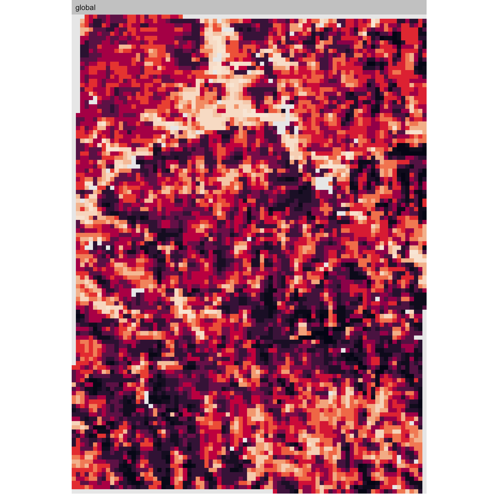
show_patches(sg.class, class = "global")$layer_1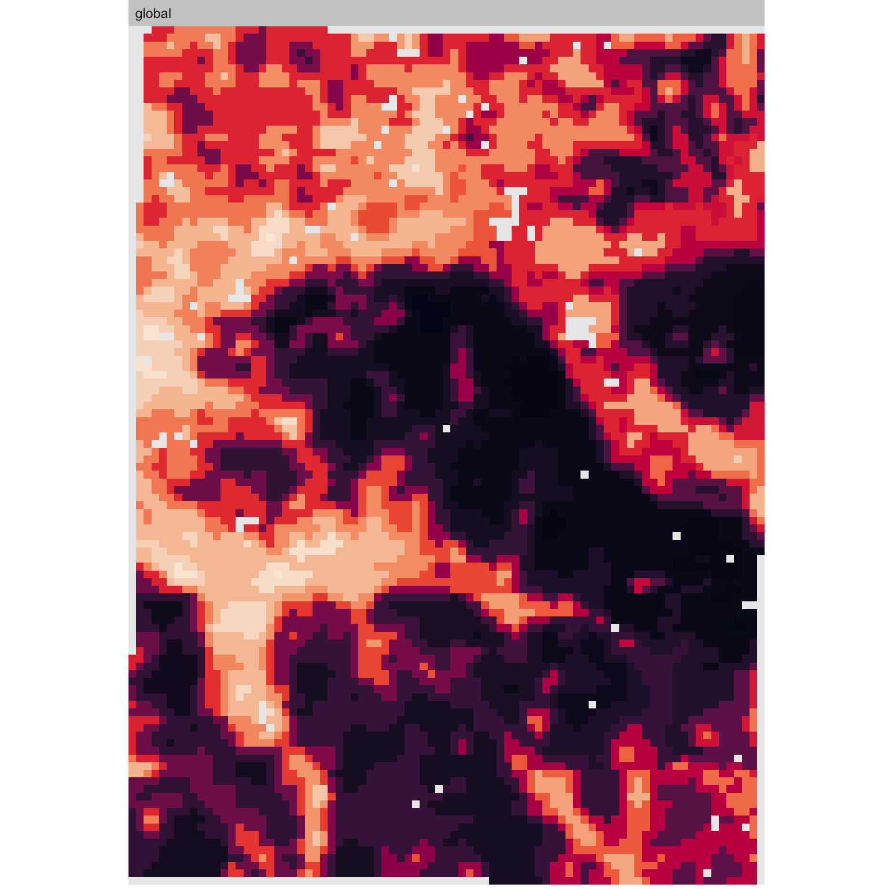
per-class:
show_patches(sg.class, class = "all", nrow = 3)$layer_1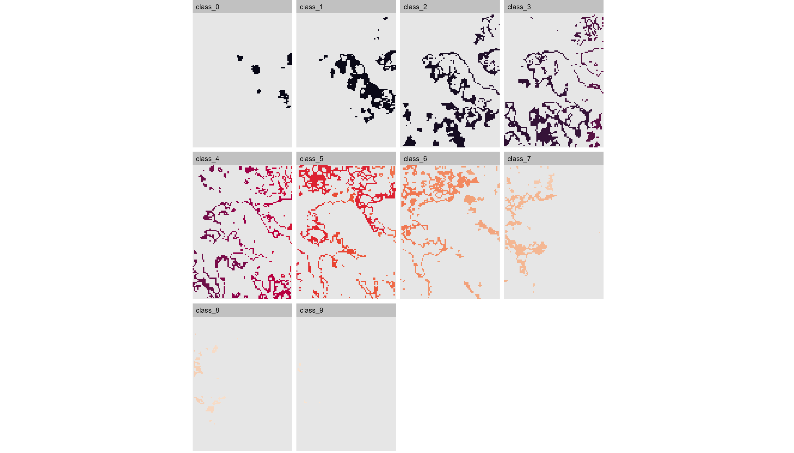
show_patches(gn.class, class = "all", nrow = 3)$layer_1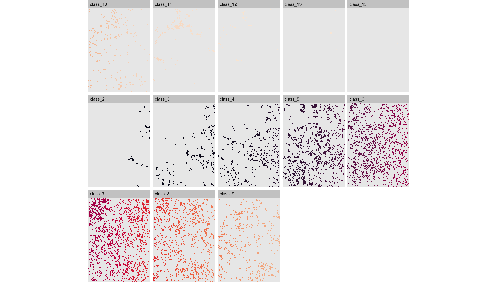
Q: Describe the main differences between the patterns. Which map seems more aggregated? More diverse?
Task: compute the metrics and tabulate them:
lst <- paste0("lsm_l_", c("shdi", "shei", "lsi", "ai", "frac_mn"))
ls.metrics.gn <- calculate_lsm(gn.class, what=lst)
ls.metrics.sg <- calculate_lsm(sg.class, what=lst)
metrics.table <- data.frame(product=c("gNATSGO", "SG2"),
rbind(round(ls.metrics.gn$value, 3),
round(ls.metrics.sg$value, 3)))
names(metrics.table)[2:6] <- ls.metrics.gn$metric
metrics.tableQ: Referring to the descriptions of these metrics (above), what are the differences between these maps’ landscape patterns? Where do the maps most differ?
- Aggregation Index
- Mean Fractal Dimension
- Landscape Shape Index
- Shannon Diversity
- Shannon Evenness
7 Comparing patterns of classified maps
Once we have various pattern metrics computed on different maps of the same area, an obvious question is “How much and how do they differ?”. The question of “best” map is not (yet) asked.
We can directly compare the metrics; see above (Section 6.6).
We can compare the adjacency structures; see above (Section 6.4) and next (Section 7.1).
We can compare the intersections of the maps: use one as a reference and determine how well the other map reproduces the structure of the first; see below (Section 7.2.4) .
7.1 Co-occurrence vectors
Task: Compute the difference between the co-occurrence patterns of the two maps.
This uses the Jensen-Shannon distance between matrix columns. Each row of the column vector is a co-occurrence metric of two classes. The philentropy (“Similarity and Distance Quantification Between Probability Functions”) package implements this distance metric. This metric is commonly used to compare probability distributions. It computes the entropy of each probability vector (here, the co-occurrence vector) and the entropy of their average and, from these, the distance in entropy space between them:
\[2d = \sum_i \big(P_i \; log\frac{2 P_i}{P_i + Q_i}\big) + \sum_i \big(Q_i \; log\frac{2 Q_i}{P_i + Q_i}\big)\] where \(P\) and \(Q\) are the two vectors, and \(i\) is the row, i.e., single co-occurrence value.
Increasing values indicate increasing dissimilarity in the adjacency patterns, i.e., greater entropy. If the adjacency structures are identical, the distance is zero.
names(cove.gn)[1] "id" "na_prop" "signature"cove.df <- data.frame(cove.gn)$signature[[1]][1,]
cove.df <- rbind(cove.df, cove.sg$signature[[1]][1,])
cove.dists <- round(
philentropy::distance(cove.df, method = "jensen-shannon",
use.row.names =TRUE,
as.dist.obj = FALSE,
diag = FALSE) ,4)
print(cove.dists)jensen-shannon
0.4584 This is a fairly high value.
This comparison can be streamlined with the lsp_compare method. First, over the whole map:
lsp_compare(gn.class, sg.class,
type = "cove", dist_fun = "jensen-shannon",
neighbourhood = 8, # queen's case
output = "sf")The patterns can be compared over various windows within the two maps. This allows the difference between sub-maps to be quantified.
The bounding box is 21 x 28 km. Let’s compare patterns over 4 x 4 km windows; these are 16 x 16 grid cells.
dim(sg.class)[1] 112 84 1x.dim <- diff(range(st_bbox(sg.class)[c(1,3)]))
y.dim <- diff(range(st_bbox(sg.class)[c(2,4)]))
(compare.16 <- lsp_compare(gn.class, sg.class,
type = "cove", dist_fun = "jensen-shannon",
neighbourhood = 8, # queen's case
window = 16,
output = "sf"))ggplot(data = compare.16) +
geom_sf(aes(fill = dist)) +
labs(title = "Distance between co-occurrence vectors, pH class")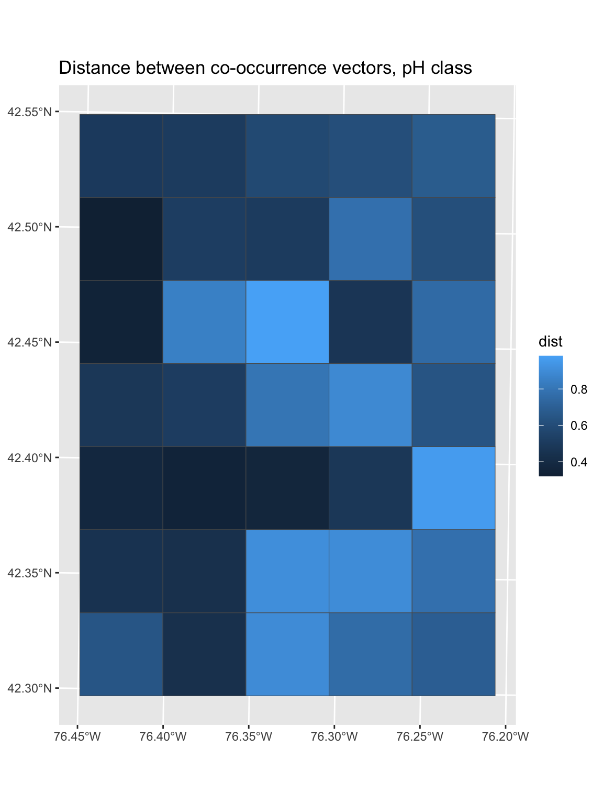
We see that the distance between co-occurrence vectors varies across the map, although in all the submaps the distance is fairly large. The patterns are closer on the west side.
Visualize these distances along with the source maps.
p1 <- ggplot(data = compare.16) +
geom_sf(aes(fill = dist)) +
theme(legend.position="none")
p2 <- ggplot() +
tidyterra::geom_spatraster(data = sg.class, aes(fill = class)) +
theme(legend.position="none")
p3 <- ggplot() +
tidyterra::geom_spatraster(data = gn.class, aes(fill = class)) +
theme(legend.position="none")
gridExtra::grid.arrange(p1, p2, p3, nrow=1)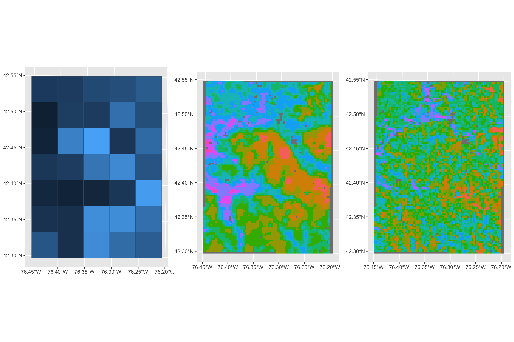
7.2 V metrics
The V-measure originated in the field of computer science as a measure for comparison of different clusterings of the same domain. It is a measure of an overall spatial correspondence between classified maps. Continuous maps must be classified into classes, and the two classified maps then compared. Note that the classes do not have to be the same, although in this example they are. The theme does not even have to be the same. For example one could compare a pH map with a clay concentration map.
Two maps could have the same total areas of each class, and even the same number of polygons within each class and even the same size distribution of these polygons, and yet be completely different in how they partition space into classes.
The polygons of a classified map are termed regions of a regionalization in the first (reference) map and zones of a partition in the second map. These are intersected to produce segment polygons of the combined map, which are labelled with both zone and region classes.
This allows the computation of two indices:
Homogeneity compares the zones in the second map with respect to the regions in the first, i.e., how close the second map comes to reproducing the regionalization of the first. Thus it evaluates the second map, in terms of the first.
It is computed as the variance of the regions within a zone, normalized by the variance of the regions in the entire domain of the first map. These variances are computed by the Shannon entropy based on areas of the segments.
If the variance of the regions within the zones is small, then the partition into zones in the second map is relatively homogeneous with respect to the regionalization. A perfectly homogeneous partition (with value 1) is when each zone of the second map is within a single region of the reference map. In this case, each zone has only one reference class. A perfectly inhomogeneous partition (with value 0) is when each zone has the same composition of regions as the entire domain of the first map, i.e., the second map’s partition is essentially random with respect to the first map’s regionalization.
Completeness is a function of homogeneity of the regions in the first map with respect to the zones in the second, i.e., how much the partition in the first map reproduce that of the second. Thus it evaluates the first map by the second.
The completeness of the second map is the inverse of homogeneity; it assesses the variance of the zones within a region normalized by the variance of the zones in the entire domain of the second map. It evaluates the homogeneity of regions with respect to zones and shows how well the regionalization of the reference map fits inside the partition of the map to be evaluated. A perfectly complete regionalization is when each region of the reference map is entirely within a single zone of the map to be evaluated. In this case, a polygon of the reference map will not be split among zones.
These two together are combined into a single V measure of agreement between the maps, as the harmonic mean of homogeneity and completeness.
This function uses the sf::st_intersection(), which depends on the coordinates values precision. For example, precision = 1000 rounds values to the third decimal places and precision = 0.001 uses values rounded to the nearest 1000, see ?sf::st_as_binary.
V-measure methods are implemented in the sabre “Spatial Association Between Regionalizations” package, as explained in (Nowosad & Stepinski, 2018a).
The vmeasure_calc() function calculates intersections of the input geometries. For this function we must specify the names of the columns with the region names; both x and y must contain POLYGONs or MULTIPOLYGONs and have the same CRS.
7.2.1 Polygonize
The V-metrics require polygon maps, not gridded maps of classes.
Task: Polygonize them and adjust the class names.
gn.poly <- terra::as.polygons(gn.class,
aggregate= TRUE,
values = TRUE,
dissolve = TRUE)
sg.poly <- terra::as.polygons(sg.class,
aggregate= TRUE,
values = TRUE,
dissolve=TRUE)7.2.2 Simple Features
Some of the methods require Simple Features representation of spatial objects.
Task: Convert the terra::SpatVector objects to Simple Features.
Sometimes these may have some simple POLYGONs, so ensure all are MULTIPOLYGON as required by vmeasure_calc, below.
gn.sf <- st_as_sf(gn.poly)
gn.sf <- st_cast(gn.sf, "MULTIPOLYGON")
#
sg.sf <- st_as_sf(sg.poly)
sg.sf <- st_cast(sg.sf, "MULTIPOLYGON")7.2.3 Topology
Task: Check that the topology of the polygon map is correct. If not sabre::vmeasure_calc (see below) throws an error. Clean up the topology with sf::st_make_valid.
As explained here: “Spatial line and polygon data are often messy; although simple features formally follow a standard, there is no guarantee that data is clean when imported in R.”
Note: The typecasting to MULTIPOLYGON is required for the sabre methods. Without this, the geometry type is the more general GEOMETRY although all the items are already MULTIPOLYGONs.
st_is_valid(gn.sf, reason=TRUE) [1] "Valid Geometry" "Valid Geometry" "Valid Geometry" "Valid Geometry"
[5] "Valid Geometry" "Valid Geometry" "Valid Geometry" "Valid Geometry"
[9] "Valid Geometry" "Valid Geometry" "Valid Geometry" "Valid Geometry"
[13] "Valid Geometry"gn.sf.v <- sf::st_make_valid(gn.sf) |> st_cast("MULTIPOLYGON")
#
st_is_valid(sg.sf, reason=TRUE) [1] "Valid Geometry" "Valid Geometry" "Valid Geometry" "Valid Geometry"
[5] "Valid Geometry" "Valid Geometry" "Valid Geometry" "Valid Geometry"
[9] "Valid Geometry" "Valid Geometry"sg.sf.v <- sf::st_make_valid(sg.sf) |> st_cast("MULTIPOLYGON")In this case the topology was valid, but if you are running this with your own maps it may not be.
Display the polygon maps. Compute each legend from the classes present in that map, but use a consistent colour scale. This requires some ggplot2 tricks with colorRampPalette to set up a palette with a large number of discrete values, and the limits argument to scale_fill_manual to only show the parts of that scale occurring in each map.
classes.both <- union(values(sg.poly)$class, values(gn.poly)$class)
my.pal <- colorRampPalette(brewer.pal(8, "PuBu"))(length(classes.both))
g0 <- ggplot(data=gn.sf.v) +
geom_sf(aes(fill = class)) +
coord_sf(crs = st_crs(gn.sf)) +
labs(title = "gNATSGO") +
scale_fill_manual(values = my.pal, drop=TRUE,
limits = levels(gn.sf.v$class)) +
theme(legend.position = "bottom", legend.direction = "horizontal")
g1 <- ggplot(data=sg.sf.v) +
geom_sf(aes(fill = class)) +
coord_sf(crs = st_crs(sg.sf)) +
labs(title = "SG2") +
scale_fill_manual(values = my.pal, drop=TRUE,
limits = levels(gn.sf.v$class)) +
theme(legend.position = "bottom", legend.direction = "horizontal")
grid.arrange(g0,g1, nrow=1, ncol=2)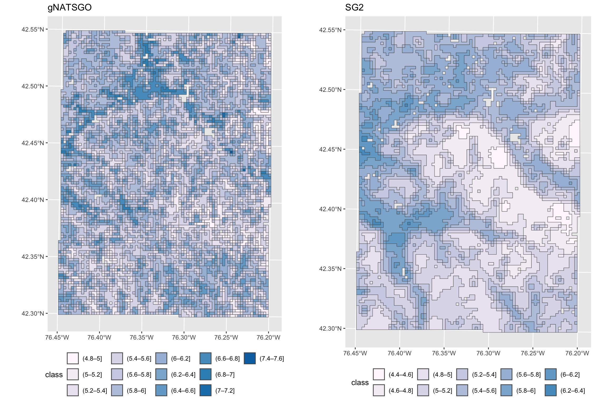
This is the same information we’ve seen in the raster maps, but now organized as polygons.
7.2.4 Compute the V-metrics
Task: Compute the metrics with the sabre(“Spatial Association Between Regionalizations”) package. The second-listed map is the map to evaluate, with respect to the first-listed (reference) map. Here we evaluate the SoilGrids pattern vs. the gNATSGO as reference.
regions.sg.gn <- sabre::vmeasure_calc(x = gn.sf.v,
y = sg.sf.v,
x_name = class, y_name = class)
print(regions.sg.gn)The SABRE results:
V-measure: 0.04
Homogeneity: 0.04
Completeness: 0.04
The spatial objects can be retrieved with:
$map1 - the first map
$map2 - the second map names(regions.sg.gn)[1] "map1" "map2" "v_measure" "homogeneity" "completeness"names(regions.sg.gn$map1)[1] "map1" "geometry" "rih" attr(regions.sg.gn, "precision") # NULL, means a system defaultNULLBoth the homogeneity and completeness are near 0, their harmomic mean V-measure also very low. These maps hardly reseble each other. We will see the details just below.
Item rih (“region inhomogeneity”) is the intersection map. Show these, but first the geometric precision must be set.
Geometric precision is set by st_as_binary, default is attr(x, "precision"). Here we left it as the default NULL.
Task: Plot the inhomogeneity and incompleteness.
terra::plot(regions.sg.gn$map1["rih"], main = "Inhomogeneity -- SG2 vs. gNATSGO")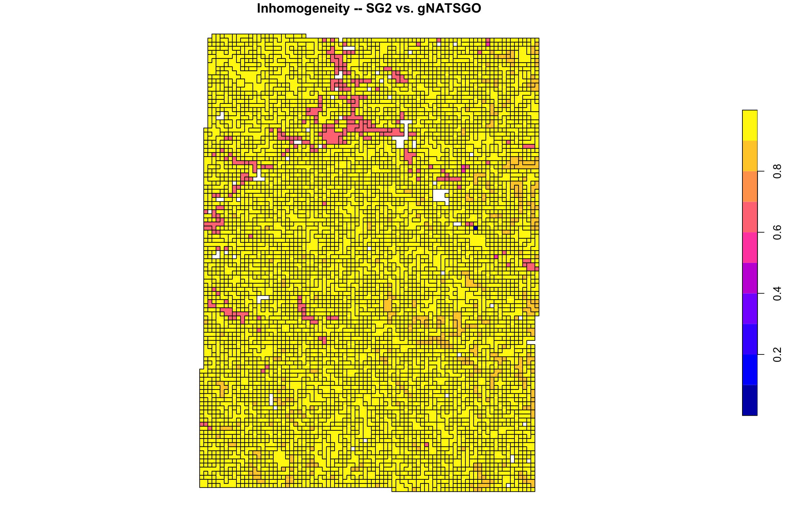
In this inhomogeneity map, almost all areas are highly inhomogeneous. This means that the SG2 polygons are highly variable – they contain almost the same distribution of classes from the gNATSGO map. Only a few patches are somewhat more homogeneous.
terra::plot(regions.sg.gn$map2["rih"], main = "Incompleteness -- SG2 vs. gNATSGO")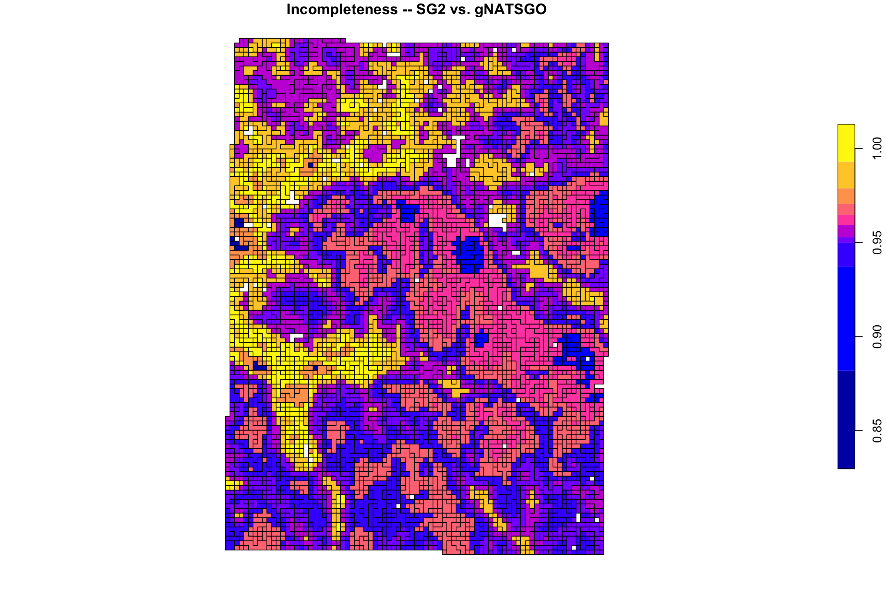
In this incompleteness map, all areas are quite incomplete, but there are more differences. The blue polygons (lowest values) are the most complete areas of the gNATSGO map, i.e. where the reference map has the most homogeneous set of SG2 classified values. The highly-incomplete areas are where gNATSGO has a limited range of values (in this case, a narrow range of higher pH) so they have low variance compared to SG2 predictions for these areas.
We conclude that the maps are quite different in their spatial patterns.
8 Supercells
“Superpixels” is a generic name for grouping pixels with similar characteristics into larger assemblages. In the soil map context, the aim is to regionalize into areas with similar values of one or more raster layers.
The supercells::supercells function controls the segmentation: the user can specify the k arguement for the number of supercells, and the compactness argument to control shape: larger values lead to more square, less long/twisted shapes. It is also possible to specify a set of initial supercell centres (with an sf POINTS geometry) or a separation between initial centres with the step argument.
This function implements the SLIC algorithm (Achanta et al., 2012).
As an example with the pH map, we divide into about 50 supercells, with low compactness since we don’t expect near-square natural units. Here is the source map:
ggplot() +
geom_spatraster(data=sg.utm) +
labs(fill = "pH")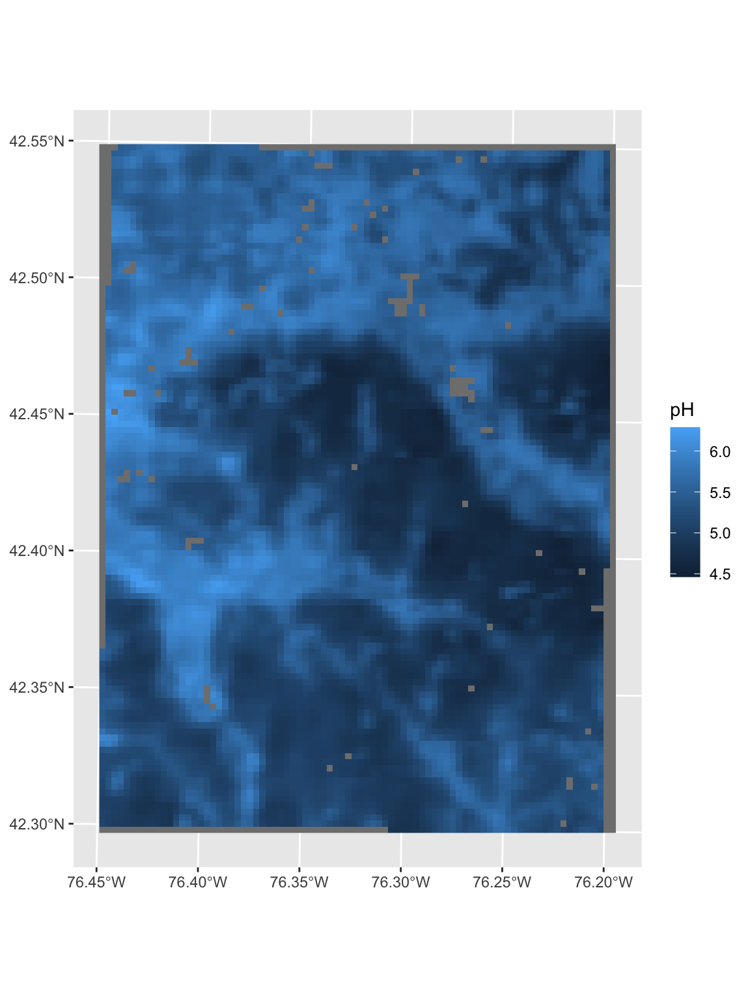
And here are the 50 supercells, with very low compactness:
sg.utm.50 = supercells(sg.utm, k = 50, compactness = 0.5)
ggplot(data=sg.utm.50) +
geom_sf(aes(fill = phh2o_0.5cm_mean)) +
labs(fill = "mean pH")
Try to form more compact supercells:
sg.utm.50 = supercells(sg.utm, k = 50, compactness = 5)
ggplot(data=sg.utm.50) +
geom_sf(aes(fill = phh2o_0.5cm_mean)) +
labs(fill = "mean pH")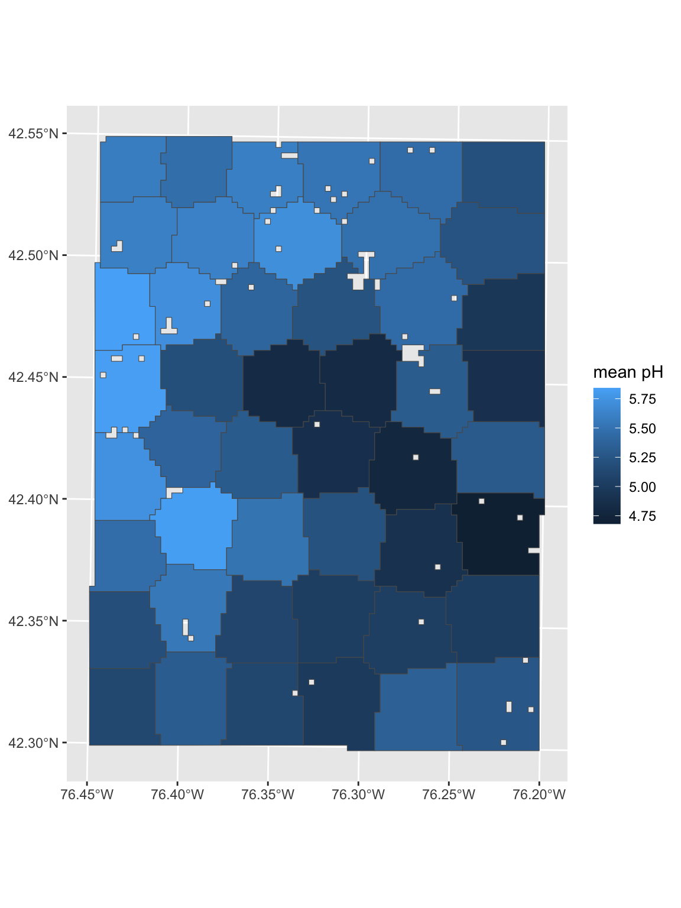
These do not look realistic.
Try with multiple rasters, here pH and silt concentration:
r <- c(sg.utm, sg.silt.utm)
r.50 = supercells(r, k = 50, compactness = 0.5)
ggplot(data=r.50) +
geom_sf(aes(fill = phh2o_0.5cm_mean)) +
labs(fill = "mean pH") +
scale_fill_continuous(type = "viridis")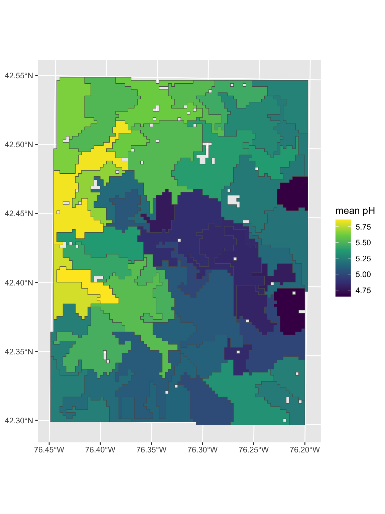
ggplot(data=r.50) +
geom_sf(aes(fill = silt_0.5cm_mean)) +
labs(fill = "silt ppt") +
scale_fill_continuous(type = "viridis")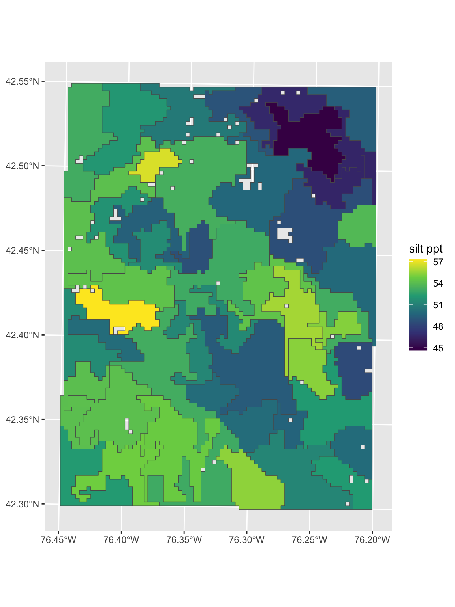
Notice that the segments are the same in the two visualizations.
9 Scale issues – geometric
The soil pattern can be observed at different scales.
DSM are produced at a wide range of grid cell sizes (“resolutions”), and it’s obvious that as the grid cell size increases any finer pattern is lost. This is especially true if the map is made with block predictions, rather than point predictions at the centre of grid cells.
Clearly, products can only be compared at the same resolution. A finer-scale product can be downscaled to the resolution of a coarser-scale product in order to compare them. For maps made at point resolution this should by mean (continuous) or majority filter (classified). For maps made at block resolution this should be by block kriging within the block at fine-scale (continuous) or mode filter (classified).
What happens to the landscape metrics as the resolution changes? Let’s examine one map from the most detailed soil survey, gSSURGO.
The design scale for the polygon SSURGO product varies across the USA. For most areas with detailed survey, it is from 1:12k to 1:24K, with Minimum Legible Area (MLA) 0.576–2.304 ha. With a grid resolution of 16 grid cells per MLA, these would be from 12x12 – 24x24 cells. The 30 m gSSURGO roughly corresponds to this coarser resolution. It is equivalent to 1:30 k design scale.
In a previous section (Section 3.4) we imported a gSSURGO polygon map.
Unfortunately, the landscapemetrics package can not (yet?) work with terra objects, or vector objects from any package. So to compute landscape metrics for these polygons, they must be rasterized to a resolution where the area and length calculations are sufficiently accurate. The median polygon area is 2.7 ha; the minimum legible area (MLA) at the design scale of the soil surveys in this area (1:20k, see published survey document) is 1.6 ha. At a grid resolution of 16 pixels per MLA this suggests 20 m horizontal resolution pixels.
Task: Rasterize the polygon map to this resolution.
First set up the empty raster and then add the values of the map unit key.
mu.template <- rast(mu.poly, res=c(20,20))
dim(mu.template)[1] 1408 1043 1mu.raster <- rasterize(mu.poly, mu.template, field="mukey")
summary(mu.raster) mukey
Min. : 295575
1st Qu.: 295605
Median : 295651
Mean : 616216
3rd Qu.: 295817
Max. :2760841
NA's :3149 check_landscape(mu.raster)This is a categorical map (the map unit keys are the categories), and we can apply the landscape metrics to it.
Map units:
Note that there are 217 classes, i.e., different map units, in this area.
TaskL Show all patches, then just the “Alluvial land”, code 295575, then all the map units with the Mardin series as a component.
head(unique(mu.raster$mukey))show_patches(mu.raster, class = "global")$layer_1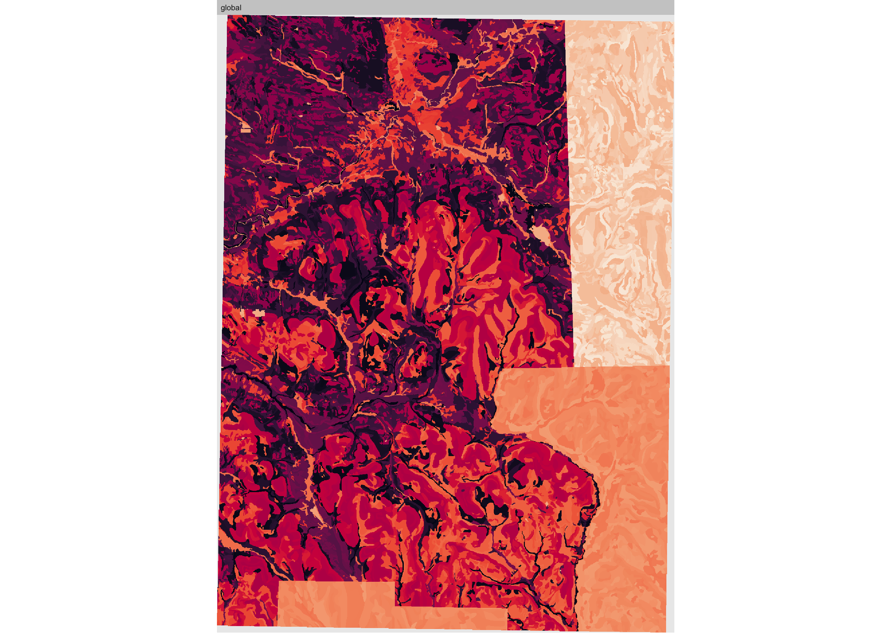
show_patches(mu.raster, class = 295575)$layer_1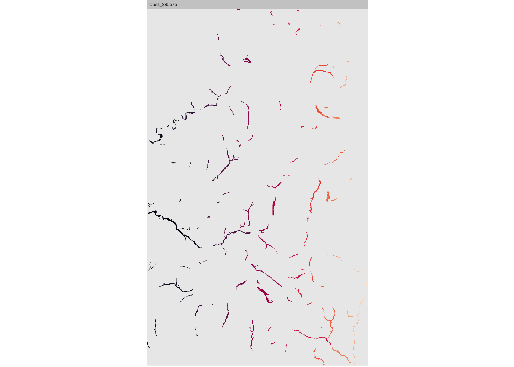
(ix <- grep("Mardin", mu.key$muname, fixed = TRUE)) [1] 63 64 65 67 100 101 102 120 121 122 123 124 125 126 149 178 179 180 181
[20] 182print(mu.key[ix, ]) mukey muname
63 295656 Mardin channery silt loam, 2 to 8 percent slopes
64 295657 Mardin channery silt loam, 8 to 15 percent slopes
65 295658 Mardin channery silt loam, 8 to 15 percent slopes, eroded
67 295660 Mardin and Langford soils, 15 to 25 percent slopes
100 295805 Mardin-Volusia complex, 15 to 30 percent slopes
101 295806 Mardin-Volusia complex, 8 to 15 percent slopes
102 295807 Mardin-Volusia complex, 0 to 8 percent slopes
120 295831 Mardin channery silt loam, 16 to 30 percent slopes, eroded
121 295832 Mardin channery silt loam, 16 to 30 percent slopes
122 295833 Mardin channery silt loam, 9 to 15 percent slopes, moderately deep
123 295834 Mardin channery silt loam, 8 to 15 percent slopes, eroded
124 295835 Mardin channery silt loam, 8 to 15 percent slopes
125 295836 Mardin channery silt loam, 0 to 8 percent slopes
126 295837 Mardin channery silt loam, 0 to 8 percent slopes, moderately deep
149 2723042 Bath and Mardin soils, 25 to 40 percent slopes
178 2723076 Mardin channery silt loam, 2 to 8 percent slopes
179 2723077 Mardin channery silt loam, 15 to 25 percent slopes
180 2723078 Mardin channery silt loam, 8 to 15 percent slopes
181 2723080 Mardin channery silt loam, 3 to 8 percent slopes, slightly acid
182 2723081 Mardin channery silt loam, 8 to 15 percent slopes, slightly acidshow_patches(mu.raster,
class = c(mu.key[ix, "mukey"]), nrow = 3)$layer_1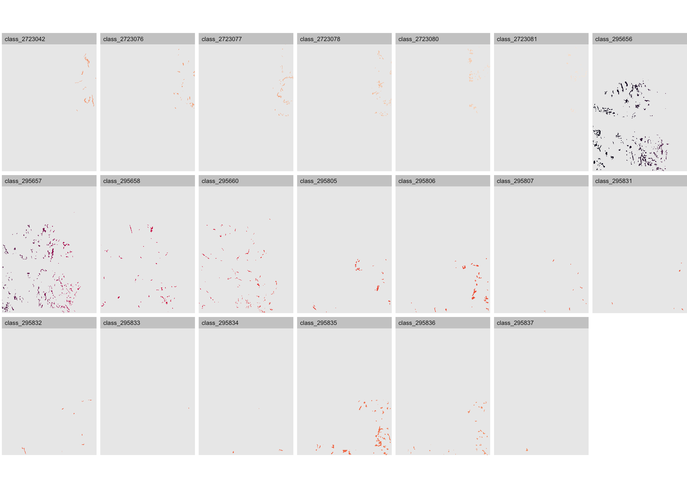
Some of these are quite small, and are categorically not so different. Much of this is due to the separate surveys in three counties. In Section 10 we combine similar map units for the landscape analysis.
9.1 20 m resolution
We rasterized the map units at 20 m grid resolution, so first analyze at this scale.
gn.20 <- mu.raster9.1.1 Landscape level
Compute the landscape metrics.:
lst <- paste0("lsm_l_", c("shdi", "shei", "lsi", "ai", "frac_mn"))
print(ls.metrics.gn20 <- calculate_lsm(gn.20, what=lst)[, c("metric", "value")])# A tibble: 5 × 2
metric value
<chr> <dbl>
1 ai 86.3
2 frac_mn 1.11
3 lsi 86.7
4 shdi 4.39
5 shei 0.815Because of the small patches, very fine pattern,large number of classes, the lsi is extremely high – i.e., far more boundaries than if the classes were contiguous. The ai is also quite high. The Shannon Diversity is also very high, because of the large number of classes and relatively equal areas. The Shannon Evenness is quite high, i.e., the areas of the classes are fairly even, there is no dominant class.
9.1.2 Class level
The class-level metrics show the distribution of classes. For example, the percentage of landscape occupied by each class (lsm_c_pland):
c_pland.20 <- calculate_lsm(gn.20, what="lsm_c_pland")
head(sort(c_pland.20$value, decreasing = TRUE), 24) [1] 5.303681 5.034498 4.229760 4.166365 3.978148 3.566361 3.380955 2.936838
[9] 2.779685 2.343791 1.947256 1.936221 1.890326 1.692129 1.666687 1.635481
[17] 1.601113 1.533009 1.490206 1.429131 1.368758 1.227630 1.169155 1.063941ix <- order(c_pland.20$value, decreasing = TRUE)
head(c_pland.20$class[ix], 24) [1] 295598 295635 295685 295582 295647 295683 295649 295656 295650 295690
[11] 295829 295657 295611 295581 295585 295828 295584 295827 295579 295604
[21] 295575 295854 295651 295596We see that there are a few large classes; the largest is about 5.6% of the landscape. But there are many more small ones.
9.1.3 Patch level
In this case patch-level metrics are also interesting – they reveal size and shape, for example.
One example is patch area, expressed in ha (\(10000 \; \mathrm{m}^2\)) – these should all be larger than the MLA (0.576–2.304 ha depending on original design scale).
# each patch
head(sort(area.20 <-
calculate_lsm(gn.20, what="lsm_p_area")$value, decreasing = TRUE))[1] 336.88 321.04 212.68 199.56 173.80 162.32quantile(area.20 , seq(0,1,by=.12)) 0% 12% 24% 36% 48% 60% 72% 84% 96%
0.0400 0.5600 1.0000 1.5600 2.3232 3.4400 5.4800 9.4400 24.7600 About 12% of the patches are smaller. This may be due to the rasterizing process (?).
Another example is the number of core areas within patches. This measures how complex is each patch:
“A cell is defined as core if the cell has no neighbour with a different value than itself (rook’s case). The metric counts the disjunct core areas, whereby a core area is a ‘patch within the patch’ containing only core cells. It describes patch area and shape simultaneously (more core area when the patch is large, however, the shape must allow disjunct core areas). Thereby, a compact shape (e.g. a square) will contain [fewer] disjunct core areas than a more irregular patch.”
# each patch
head(ncore.20 <- calculate_lsm(gn.20, what="lsm_p_ncore"))# summarize by map unit
ncore.20.summary <- ncore.20 %>% group_by(class) %>%
summarize(max_cores = max(value)) %>%
arrange(class)
print(sort(ncore.20.summary$max_cores, decreasing = TRUE)) [1] 40 22 18 14 14 13 12 12 12 12 12 12 11 11 10 10 10 10 10 10 10 9 9 9 9
[26] 9 9 9 8 8 8 8 8 8 8 7 7 7 7 7 7 6 6 6 6 6 6 6 6 6
[51] 6 6 5 5 5 5 5 5 5 5 5 5 5 5 5 5 5 5 5 5 5 5 5 4 4
[76] 4 4 4 4 4 4 4 4 4 4 4 4 4 4 4 4 4 4 4 4 4 4 4 4 3
[101] 3 3 3 3 3 3 3 3 3 3 3 3 3 3 3 3 3 3 3 3 3 3 3 3 3
[126] 3 3 3 2 2 2 2 2 2 2 2 2 2 2 2 2 2 2 2 2 2 2 2 2 2
[151] 2 2 2 2 2 2 2 2 2 2 2 2 2 2 2 2 2 2 2 2 1 1 1 1 1
[176] 1 1 1 1 1 1 1 1 1 1 1 1 1 1 1 1 1 1 1 1 1 1 1 1 1
[201] 1 1 1 1 1 1 1 1 1 1 1 1 1 1 0 0 0ix <- order(ncore.20.summary$max_cores, decreasing = TRUE)
cbind(mu.key[ix[1:8], ], ncore = ncore.20.summary$max_cores[ix[1:8]])The Erie unit has by far the most core areas. Display it:
show_patches(gn.20, class = mu.key[ix[1], "mukey"])$layer_1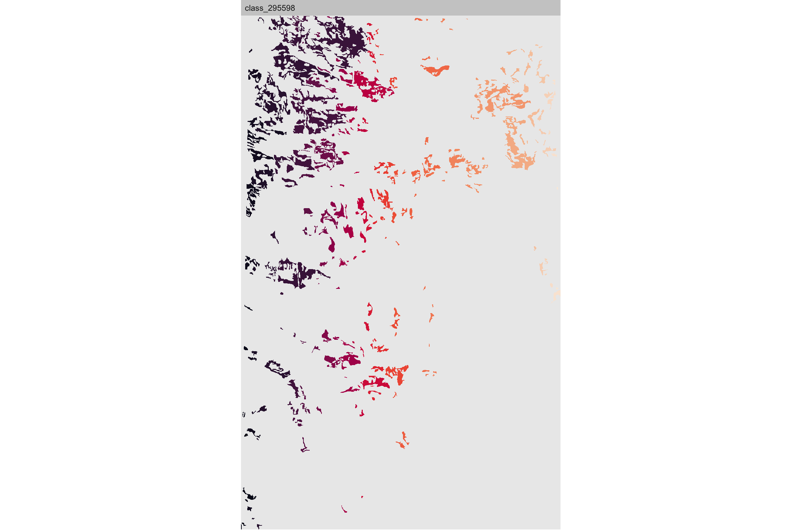
Display the ncore patch-level metric as a map:
show_lsm(gn.20, "lsm_p_ncore")$layer_1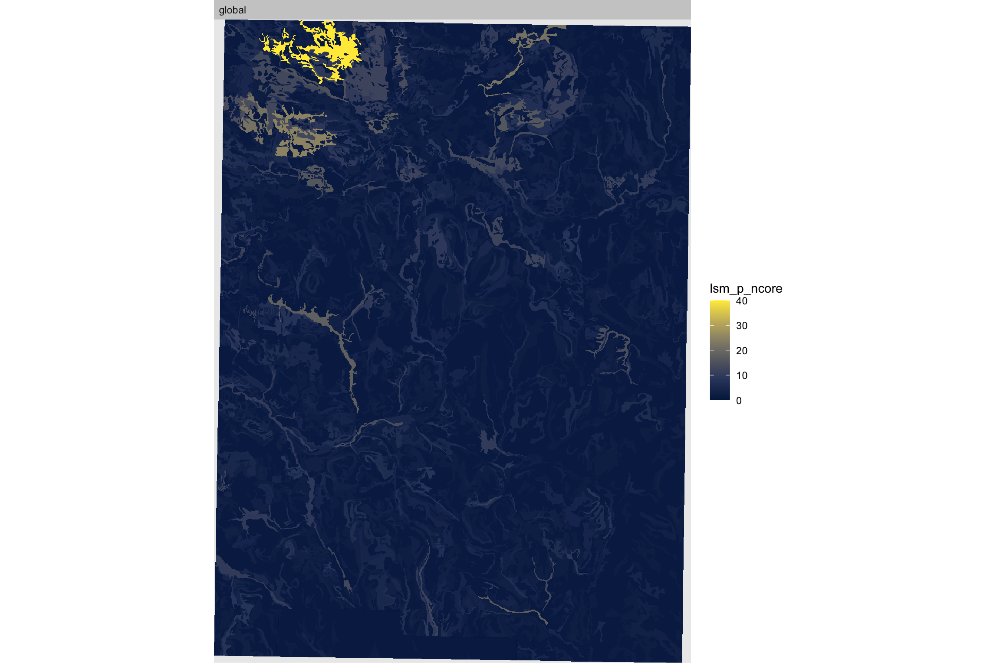
We can see the highly-fragmented map unit on the upper left.
9.2 100 m resolution
What happens as the resolution is coarsened to 100 x 100, roughly equivalent to 1:100k design scale?
We use the majority (“modal”) filter in the reclassification, with a one-dimension 5-fold aggregation.
gn.100 <- terra::aggregate(gn.20, fact=5, fun="modal")Patches are clearly larger than in the 20 m resolution.
9.2.1 Landscape level
Landscape metrics:
print(ls.metrics.gn20[, c("metric", "value")])# A tibble: 5 × 2
metric value
<chr> <dbl>
1 ai 86.3
2 frac_mn 1.11
3 lsi 86.7
4 shdi 4.39
5 shei 0.815print(ls.metrics.gn100 <- calculate_lsm(gn.100, what=lst)[, c("metric", "value")])# A tibble: 5 × 2
metric value
<chr> <dbl>
1 ai 52.3
2 frac_mn 1.04
3 lsi 60.0
4 shdi 4.37
5 shei 0.815The Aggregation Index and Landscape Shape Index are much lower. The Fractal Dimension is somewhat lower. The Shannon diversity and evenness have hardly changed.
9.2.2 Class level
What about the class metrics?
c_pland.100 <- calculate_lsm(gn.100, what="lsm_c_pland")
head(sort(c_pland.20$value, decreasing = TRUE), 24) [1] 5.303681 5.034498 4.229760 4.166365 3.978148 3.566361 3.380955 2.936838
[9] 2.779685 2.343791 1.947256 1.936221 1.890326 1.692129 1.666687 1.635481
[17] 1.601113 1.533009 1.490206 1.429131 1.368758 1.227630 1.169155 1.063941head(sort(c_pland.100$value, decreasing = TRUE), 24) [1] 5.341283 5.029900 4.299211 4.230211 4.062135 3.612753 3.368600 2.924525
[9] 2.798910 2.358374 1.930222 1.926683 1.903684 1.701992 1.668377 1.663069
[17] 1.624146 1.551608 1.496762 1.454301 1.417147 1.213687 1.201302 1.084533Very little difference in the class composition.
9.2.3 Patch level
Patch metrics:
First, the patch areas.
# each patch
head(sort(area.100 <-
calculate_lsm(gn.100, what="lsm_p_area")$value, decreasing = TRUE))[1] 350 286 271 260 253 240quantile(area.20, seq(0,1,by=.12)) 0% 12% 24% 36% 48% 60% 72% 84% 96%
0.0400 0.5600 1.0000 1.5600 2.3232 3.4400 5.4800 9.4400 24.7600 quantile(area.100, seq(0,1,by=.12)) 0% 12% 24% 36% 48% 60% 72% 84% 96%
1 1 1 2 3 4 6 11 28 Now all the patches are larger than the MLA for 1:12k.
The core areas:
# each patch
head(ncore.100 <- calculate_lsm(gn.100, what="lsm_p_ncore"))# summarize by map unit
ncore.100.summary <- ncore.100 %>% group_by(class) %>%
summarize(max_cores = max(value)) %>%
arrange(class)
print(sort(ncore.20.summary$max_cores, decreasing = TRUE)) [1] 40 22 18 14 14 13 12 12 12 12 12 12 11 11 10 10 10 10 10 10 10 9 9 9 9
[26] 9 9 9 8 8 8 8 8 8 8 7 7 7 7 7 7 6 6 6 6 6 6 6 6 6
[51] 6 6 5 5 5 5 5 5 5 5 5 5 5 5 5 5 5 5 5 5 5 5 5 4 4
[76] 4 4 4 4 4 4 4 4 4 4 4 4 4 4 4 4 4 4 4 4 4 4 4 4 3
[101] 3 3 3 3 3 3 3 3 3 3 3 3 3 3 3 3 3 3 3 3 3 3 3 3 3
[126] 3 3 3 2 2 2 2 2 2 2 2 2 2 2 2 2 2 2 2 2 2 2 2 2 2
[151] 2 2 2 2 2 2 2 2 2 2 2 2 2 2 2 2 2 2 2 2 1 1 1 1 1
[176] 1 1 1 1 1 1 1 1 1 1 1 1 1 1 1 1 1 1 1 1 1 1 1 1 1
[201] 1 1 1 1 1 1 1 1 1 1 1 1 1 1 0 0 0print(sort(ncore.100.summary$max_cores, decreasing = TRUE)) [1] 13 12 9 9 9 7 7 6 5 5 4 4 4 4 4 4 3 3 3 3 3 3 3 3 3
[26] 3 3 3 3 3 3 3 3 3 3 3 3 2 2 2 2 2 2 2 2 2 2 2 2 2
[51] 2 2 2 2 2 2 2 2 2 2 2 2 2 2 2 2 2 2 2 2 2 2 2 2 2
[76] 2 2 1 1 1 1 1 1 1 1 1 1 1 1 1 1 1 1 1 1 1 1 1 1 1
[101] 1 1 1 1 1 1 1 1 1 1 1 1 1 1 1 1 1 1 1 1 1 1 1 1 1
[126] 1 1 1 1 1 1 1 1 1 1 1 1 1 1 1 1 1 1 1 1 0 0 0 0 0
[151] 0 0 0 0 0 0 0 0 0 0 0 0 0 0 0 0 0 0 0 0 0 0 0 0 0
[176] 0 0 0 0 0 0 0 0 0 0 0 0 0 0 0 0 0 0 0 0 0 0 0 0 0
[201] 0 0 0 0 0 0 0 0 0 0 0 0 0 0ix <- order(ncore.100.summary$max_cores, decreasing = TRUE)
cbind(mu.key[ix[1:8], ], ncore = ncore.100.summary$max_cores[ix[1:8]])The Erie unit again has the most core areas, but many small cores have been absorbed in their neighbours.
Display it:
show_patches(gn.100, class = mu.key[ix[1], "mukey"])$layer_1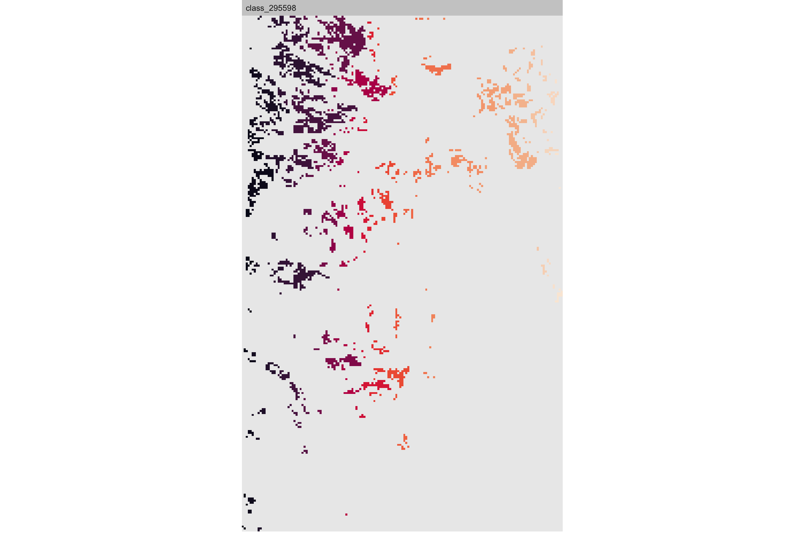
Display the ncore patch-level metric as a map:
show_lsm(gn.100, "lsm_p_ncore")$layer_1
9.3 300 m resolution
What happens as the resolution is again coarsened to 300 x 300 m, roughly equivalent to 1:300 k design scale?
We use a 3x3 aggregation, again with a modal filter.
gn.300 <- terra::aggregate(gn.100, fact=3, fun="modal")9.3.1 Landscape level
Landscape metrics:
print(ls.metrics.gn20[, c("metric", "value")])# A tibble: 5 × 2
metric value
<chr> <dbl>
1 ai 86.3
2 frac_mn 1.11
3 lsi 86.7
4 shdi 4.39
5 shei 0.815print(ls.metrics.gn100[, c("metric", "value")])# A tibble: 5 × 2
metric value
<chr> <dbl>
1 ai 52.3
2 frac_mn 1.04
3 lsi 60.0
4 shdi 4.37
5 shei 0.815print(ls.metrics.gn300 <- calculate_lsm(gn.300, what=lst)[, c("metric", "value")])# A tibble: 5 × 2
metric value
<chr> <dbl>
1 ai 30.2
2 frac_mn 1.02
3 lsi 29.2
4 shdi 4.28
5 shei 0.830The Aggregation Index and Landscape Shape Index are again much lower. The Fractal Dimension is again somewhat lower. The Shannon diversity is somewhat lower and the evenness somewhat higher.
9.3.2 Class level
What about the class metrics?
c_pland.300 <- calculate_lsm(gn.300, what="lsm_c_pland")
head(sort(c_pland.20$value, decreasing = TRUE), 24) [1] 5.303681 5.034498 4.229760 4.166365 3.978148 3.566361 3.380955 2.936838
[9] 2.779685 2.343791 1.947256 1.936221 1.890326 1.692129 1.666687 1.635481
[17] 1.601113 1.533009 1.490206 1.429131 1.368758 1.227630 1.169155 1.063941head(sort(c_pland.100$value, decreasing = TRUE), 24) [1] 5.341283 5.029900 4.299211 4.230211 4.062135 3.612753 3.368600 2.924525
[9] 2.798910 2.358374 1.930222 1.926683 1.903684 1.701992 1.668377 1.663069
[17] 1.624146 1.551608 1.496762 1.454301 1.417147 1.213687 1.201302 1.084533head(sort(c_pland.300$value, decreasing = TRUE), 24) [1] 5.869953 5.140263 4.815956 4.653802 4.297065 3.534944 3.340360 3.178207
[9] 2.594454 2.156640 2.124210 1.978271 1.978271 1.945841 1.783687 1.767472
[17] 1.702611 1.637749 1.605319 1.508027 1.491811 1.167504 1.167504 1.135074The largest classes are larger.
9.3.3 Patch level
First, the patch areas.
# each patch
head(sort(area.300 <-
calculate_lsm(gn.300, what="lsm_p_area")$value, decreasing = TRUE))[1] 621 432 423 369 342 306quantile(area.20, seq(0,1,by=.12)) 0% 12% 24% 36% 48% 60% 72% 84% 96%
0.0400 0.5600 1.0000 1.5600 2.3232 3.4400 5.4800 9.4400 24.7600 quantile(area.100, seq(0,1,by=.12)) 0% 12% 24% 36% 48% 60% 72% 84% 96%
1 1 1 2 3 4 6 11 28 quantile(area.300, seq(0,1,by=.12)) 0% 12% 24% 36% 48% 60% 72% 84% 96%
9 9 9 9 9 18 18 27 72 Now the cores:
# each patch
head(ncore.300 <- calculate_lsm(gn.300, what="lsm_p_ncore"))# summarize by map unit
ncore.300.summary <- ncore.300 %>% group_by(class) %>%
summarize(max_cores = max(value)) %>%
arrange(class)
print(ncore.20.summary)# A tibble: 217 × 2
class max_cores
<int> <dbl>
1 295575 18
2 295576 2
3 295577 4
4 295578 1
5 295579 4
6 295580 3
7 295581 10
8 295582 12
9 295583 1
10 295584 12
# ℹ 207 more rowsprint(ncore.100.summary)# A tibble: 214 × 2
class max_cores
<int> <dbl>
1 295575 2
2 295576 1
3 295577 1
4 295578 0
5 295579 3
6 295580 0
7 295581 2
8 295582 9
9 295583 1
10 295584 3
# ℹ 204 more rowsprint(ncore.300.summary)# A tibble: 173 × 2
class max_cores
<int> <dbl>
1 295575 0
2 295576 0
3 295577 0
4 295578 0
5 295579 1
6 295581 0
7 295582 2
8 295583 0
9 295584 0
10 295585 0
# ℹ 163 more rowsAlmost all of the isolated core areas have been merged with adjacent pixels, with the modal filter.
The Erie unit again has the most core areas, but many small cores have been absorbed in their neighbours.
Display it:
show_patches(gn.300, class = mu.key[ix[1], "mukey"])$layer_1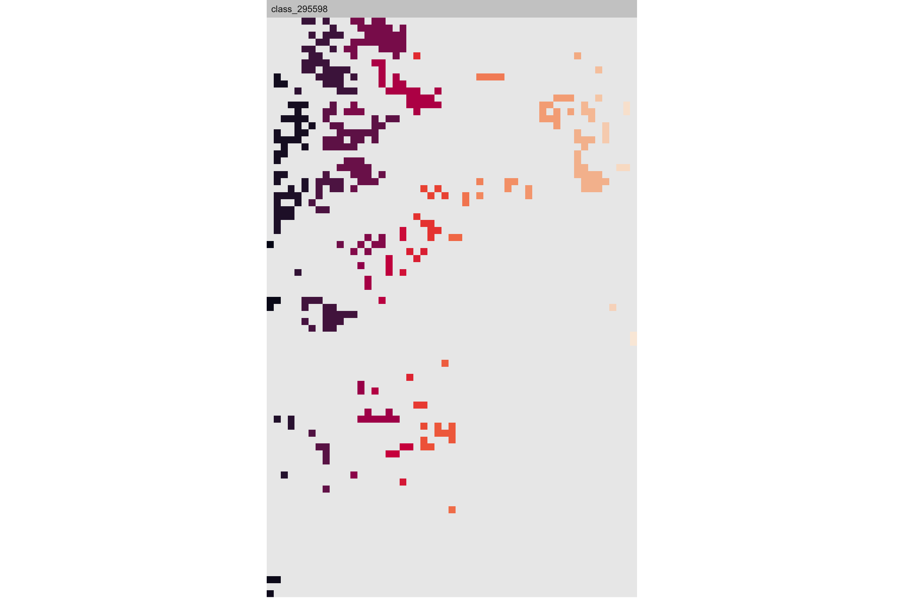
Display the ncore patch-level metric as a map:
show_lsm(gn.300, "lsm_p_ncore")$layer_1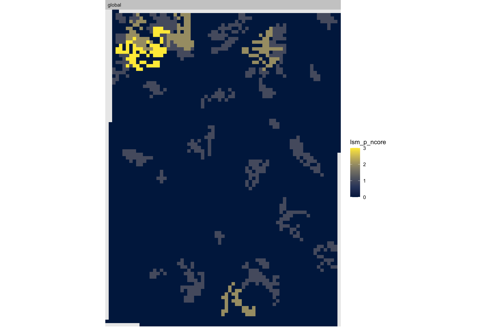
Most of the map has no cores, i.e., single pixels surrounded by different classes.
9.4 Conclusions about geometric scale issues
Landscape level: The diversity (class number and relative proportion) hardly change, if at all.
Class level: Class composition hardly changes; some classes slightly increase in total area, others slightly lose area.
Patch level: Core areas (isolated pixels) decrease with increasing resolution.
So, which scale is most “realistic”?
10 Scale issues – categorical
Categorical generalization is when related map units are grouped into more general units that share sufficient commonality to be considered “homogeneous” at a more general categorical level.
Many soil classification system support this directly by their hierarchical structure.
Task: Find the map units where the Mardin series is a component.
mukey muname
63 295656 Mardin channery silt loam, 2 to 8 percent slopes
64 295657 Mardin channery silt loam, 8 to 15 percent slopes
65 295658 Mardin channery silt loam, 8 to 15 percent slopes, eroded
67 295660 Mardin and Langford soils, 15 to 25 percent slopes
100 295805 Mardin-Volusia complex, 15 to 30 percent slopes
101 295806 Mardin-Volusia complex, 8 to 15 percent slopes
102 295807 Mardin-Volusia complex, 0 to 8 percent slopes
120 295831 Mardin channery silt loam, 16 to 30 percent slopes, eroded
121 295832 Mardin channery silt loam, 16 to 30 percent slopes
122 295833 Mardin channery silt loam, 9 to 15 percent slopes, moderately deep
123 295834 Mardin channery silt loam, 8 to 15 percent slopes, eroded
124 295835 Mardin channery silt loam, 8 to 15 percent slopes
125 295836 Mardin channery silt loam, 0 to 8 percent slopes
126 295837 Mardin channery silt loam, 0 to 8 percent slopes, moderately deep
149 2723042 Bath and Mardin soils, 25 to 40 percent slopes
178 2723076 Mardin channery silt loam, 2 to 8 percent slopes
179 2723077 Mardin channery silt loam, 15 to 25 percent slopes
180 2723078 Mardin channery silt loam, 8 to 15 percent slopes
181 2723080 Mardin channery silt loam, 3 to 8 percent slopes, slightly acid
182 2723081 Mardin channery silt loam, 8 to 15 percent slopes, slightly acidIn the case of USA soil survey, many map units are quite similar. For example, there are 20 map units in the small study area where the Mardin series is the only one naned, or it is one of the series in a complex. These map units differ mostly by slope class. Their land use potential may be somewhat different, mainly due to slope, but their soil properties are quite similar.
Task: Generalize the soil map units of the polygon map by combining map units with the same dominant soil series.
First, make a list of the first-named soil series:
length(names <- mu.key$muname)[1] 217# first name by spaces
names <- strsplit(names, " ")
head(names)[[1]]
[1] "Alluvial" "land"
[[2]]
[1] "Arkport" "fine" "sandy" "loam," "2" "to" "6"
[8] "percent" "slopes"
[[3]]
[1] "Arkport" "fine" "sandy" "loam," "6" "to" "12"
[8] "percent" "slopes"
[[4]]
[1] "Bath" "channery" "silt" "loam," "2" "to" "5"
[8] "percent" "slopes"
[[5]]
[1] "Bath" "channery" "silt" "loam," "5" "to" "15"
[8] "percent" "slopes"
[[6]]
[1] "Bath" "channery" "silt" "loam," "5" "to"
[7] "15" "percent" "slopes," "eroded" names.unique <- unique(unlist(lapply(names, function(x) x[1])))
print(names.unique) [1] "Alluvial" "Arkport"
[3] "Bath" "Bath,"
[5] "Braceville" "Canandaigua"
[7] "Chenango" "Conesus"
[9] "Darien" "Erie"
[11] "Chippewa" "Eel"
[13] "Erie-Chippewa" "Fredon"
[15] "Fresh" "Genesee"
[17] "Halsey" "Howard"
[19] "Holly" "Howard-Valois"
[21] "Hudson" "Hudson-Cayuga"
[23] "Ilion" "Kendaia"
[25] "Langford" "Lordstown"
[27] "Lordstown," "Lyons"
[29] "Mardin" "Made"
[31] "Madalin" "Middlebury"
[33] "Muck" "Niagara"
[35] "Ovid" "Palmyra"
[37] "Phelps" "Red"
[39] "Rhinebeck" "Rock"
[41] "Tuller" "Volusia"
[43] "Volusia-Chippewa" "Williamson"
[45] "Wayland" "Allis"
[47] "Mardin-Volusia" "Fremont"
[49] "Arnot-Rock" "Tioga"
[51] "Woostern" "Water"
[53] "Gravel" "Quarries"
[55] "Dumps" "Alden"
[57] "Cadosia-Lordstown" "Catden-Natchaug"
[59] "Mongaup-Hawksnest" "Mongaup"
[61] "Deposit" "Lansing"
[63] "Lewbath" "Norchip"
[65] "Ontusia" "Scio"
[67] "Lordstown-Arnot" "Trestle"
[69] "Udifluvents-Fluvaquents" "Valois"
[71] "Valois-Howard" "Wayland-Natchaug"
[73] "Willdin" "Geneseo"
[75] "Hemlock" "Bath-Valois"
[77] "Rockrift-Mongaup" Now group the map units by these:
mu.poly.general <- mu.poly
names(values(mu.poly.general))[1] "mukey" "area_ac"(l.all <- length(unique(values(mu.poly)$mukey)))[1] 217names.all <- unlist(lapply(names, function(x) x[1]))
(l.general <- length(names.unique <- unique(names.all)))[1] 77for (name in names.unique) {
ix <- which(name == names.all)
# map units in this group
keys <- mu.key$mukey[ix]
# polygons of these map units
ix.polys <- which(values(mu.poly.general)$mukey %in% keys)
# rename the key
values(mu.poly.general)$mukey[ix.polys] <- keys[1]
}
names(values(mu.poly.general))[1] "mukey" "area_ac"The number of map units has reduced significantly, from 217 to 77.
Finally, generalize the polygons by dissolving between ones with the same label:
mu.poly.general <- terra::aggregate(mu.poly.general,
by = "mukey",
fun = "sum")
plot(mu.poly.general, y=2,
type = "continuous",
main = "SSURGO map units, area in acres")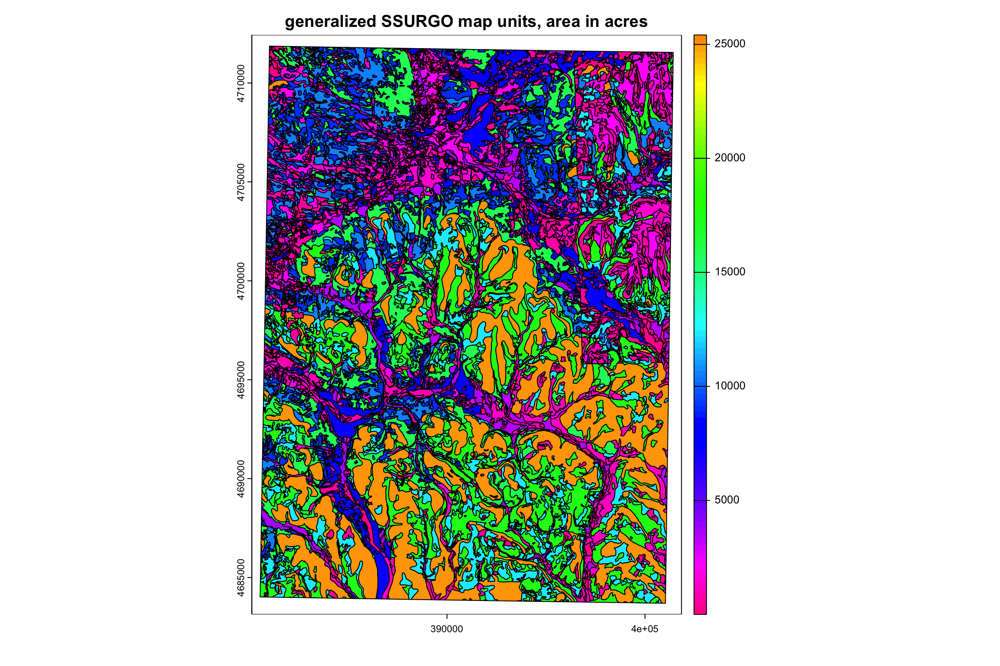
Many polygons are now much larger.
10.0.1 Landscape metrics
We can repeat the analysis of scale differences on the rasterized map. Here we just look at the 20 m resolution.
mu.raster.general <- rasterize(mu.poly.general, mu.template, field="mukey")
check_landscape(mu.raster.general)gn.20.g <- mu.raster.generalCompare the landscape-level metrics at 20 m resolution for the generalized and detailed maps:
ls.metrics <- ls.metrics.gn.20.g <- calculate_lsm(gn.20.g, what=lst)[, c("metric", "value")]
ls.metrics$detailed <- ls.metrics.gn20$value
names(ls.metrics) <- c("metric", "generalized", "detailed")
print(ls.metrics)# A tibble: 5 × 3
metric generalized detailed
<chr> <dbl> <dbl>
1 ai 89.2 86.3
2 frac_mn 1.11 1.11
3 lsi 67.6 86.7
4 shdi 2.99 4.39
5 shei 0.687 0.815The Shannon diversity is much lower in the generalized map, because there are many fewer classes and therefore more evenly distributed. The other metrics are hardly changed.
The class-level metrics show the distribution of classes; compare the generalized and detailed per-class proportion over the landscape.
c_pland.20.g <- calculate_lsm(gn.20.g, what="lsm_c_pland")
head(sort(c_pland.20.g$value, decreasing = TRUE), 24) [1] 18.0574815 12.5823100 11.4525841 8.9150934 7.5616574 6.4943426
[7] 5.2696646 2.5951928 2.3813925 1.5663227 1.5260507 1.4970942
[13] 1.4291307 1.3141480 1.0423644 1.0228257 1.0139701 0.8203410
[19] 0.8071278 0.8032622 0.7428190 0.6643131 0.6569334 0.6379571head(sort(c_pland.20$value, decreasing = TRUE), 24) [1] 5.303681 5.034498 4.229760 4.166365 3.978148 3.566361 3.380955 2.936838
[9] 2.779685 2.343791 1.947256 1.936221 1.890326 1.692129 1.666687 1.635481
[17] 1.601113 1.533009 1.490206 1.429131 1.368758 1.227630 1.169155 1.063941ix <- order(c_pland.20.g$value, decreasing = TRUE)
head(c_pland.20.g$class[ix], 24) [1] 295647 295683 295578 295656 295598 295635 295610 295690 295590
[10] 295575 2723085 295678 295604 295675 295602 295608 2723058 295805
[19] 295614 295855 295586 2723117 295622 295663head(c_pland.20$class[ix], 24) [1] 295603 295622 295577 295606 295584 295602 295594 295628 295581 295575
[11] 295658 295619 295587 295614 295585 295592 295652 295630 295596 295634
[21] 295578 295666 295598 295609Obviously the generalized map has larger areas of each class.
Compare at the patch level:
# each patch
head(sort(area.20.g <-
calculate_lsm(gn.20.g, what="lsm_p_area")$value, decreasing = TRUE))[1] 1316.60 1018.40 690.40 648.56 643.08 468.48quantile(area.20.g , seq(0,1,by=.12)) 0% 12% 24% 36% 48% 60% 72% 84% 96%
0.0400 0.5200 0.9600 1.4800 2.2400 3.4400 5.8800 11.4400 42.6784 quantile(area.20 , seq(0,1,by=.12)) 0% 12% 24% 36% 48% 60% 72% 84% 96%
0.0400 0.5600 1.0000 1.5600 2.3232 3.4400 5.4800 9.4400 24.7600 Many patches increase in size by the aggregation, but about 60% remain at the original size – these were of small classes that did not have multiple map units.
Core areas:
ncore.g <- calculate_lsm(gn.20.g, what="lsm_p_ncore")
ncore.g.summary <- ncore.g %>% group_by(class) %>%
summarize(max_cores = max(value)) %>%
arrange(class)
print(ncore.g.summary)# A tibble: 77 × 2
class max_cores
<int> <dbl>
1 295575 21
2 295576 6
3 295578 12
4 295586 10
5 295587 2
6 295589 3
7 295590 5
8 295594 1
9 295597 8
10 295598 38
# ℹ 67 more rowsg1 <- show_lsm(gn.20.g, "lsm_p_ncore")
g2 <- show_lsm(gn.20, "lsm_p_ncore")
par(mfrow = c(1,2))
g1; g2$layer_1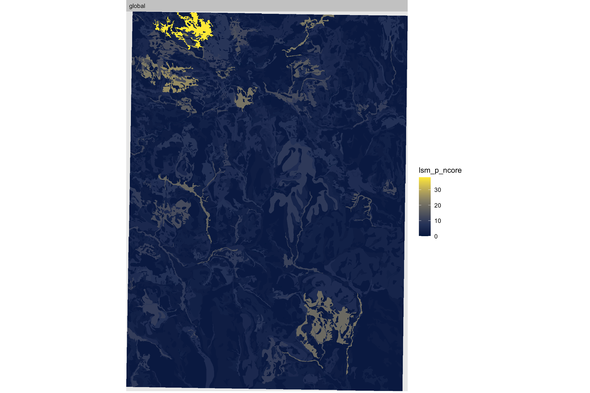
$layer_1par(mfrow = c(1,2))This same comparison could be done at increasingly larger resolutions.
10.1 Conclusions about categorical scale issues
Increasing generalization leads to fewer and larger map units.
Increasing generalization leads to lower Shannon diversity.
11 Comparing to “reality”, or Which map is “best”?
Of course, we would like a map that best represents the soilscape. But what is “best”?
11.1 Agreement with obvious landscape features
These can be geomorphic or related to land use.
View SSURGO polygons on SoilWeb with different backgrounds: (1) USGS topography, (2) ESRI imagery. To evaluate you must know the soil series in the mapped area, their genesis and typical locations. Click on map units for their series composition, and then the OSD for the series to understand its genesis and geography.
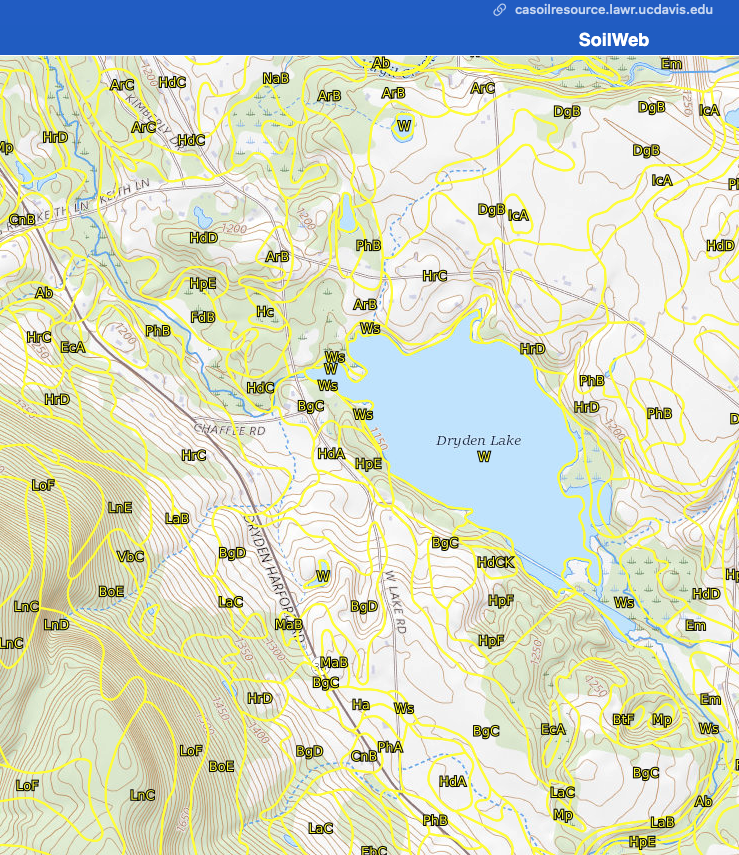
12 Pattern-based segmentation
The concept here is to characterize patterns within windows of some size and then combine these by aggregation of “similar enough” windows into larger areas, which then segment the original map. This has been applied with some success to ecophysiographic regions, using a single layer of land cover (Nowosad & Stepinski, 2018b). The segmentation does not alter any values, it only groups them into larger units with a similar pattern.
In the soils context, the pattern could be based on soil classes or on classified continuous maps. To include many soil properties the values could come classification of the first Principal Component or some user-defined composite index.
The algorithm is described by Jasiewicz et al. (2018).
This is related to stratification for locally-calibrated models and stratified sampling as implemented in the rassta package (Fuentes et al., 2022).
When identifying regions, the two complementary objectives are: homogeneous pattern within each region, and different patterns in adjacent regions (Nowosad & Stepinski, 2018b).
To assess homogeneity of a region with respect to its soils we calculate an inhomogeneity metric: the mutual dissimilarity between all sites within the region.
To assess how much a pattern in a given region differs from patterns in neighboring regions we calculate an isolation metric. This is the average dissimilarity between the core region of interest and its first neighbors, weighted by the proportion of the core region’s perimeter shared with the different neighbors.
An overall quality index for a single region can be defined as (1 – inhomogeneity/isolation), so that a higher value shows higher quality. And these can be combined by area-weighted average for the whole map.
12.1 Pattern within a region
How could this relate to soil surveys? This is scale-dependent, and seems most appropriate for semi-detailed or reconaissance-level surveys (NRCS soil survey orders 4 and 5). The pattern boundaries would match the polygon boundaries, and the composition inside the pattern would correspond to the estimate of the map unit composition and within-unit pattern.
We hope that the stratification produces polygons that are similar to soil landscape delineations that would be made by a field surveyor. These delineations form map units, that are characterized by a set of soils in a definite pattern, with the components not separable at the map design scale.
That is, if we segment with tiles of the minimum mappable area (MMA) at a given scale, we hope that the pattern within a region matches our idea of the pattern of contrasting soils that can’t be mapped at that scale. For order 4 the MMA is 16–256 ha, for order 5 this is 250 to 4,000 ha (Soil Science Division Staff, 2017, Table 4-4).
12.2 GeoPAT
“GeoPAT’s core idea is to tessellate global spatial data into grid of square blocks of original cells (pixels). This transforms data from its original form (huge number of cells each having simple content) to a new form (much smaller number of supercells/blocks with complex content). Complex cell contains a pattern of original variable.”
This is a stand-alone program which must be compiled for your operating system. Source code and installation instructions are here.
A package to interface GeoPat2 and R data structures:
require(rgeopat2)13 References
Achanta, R., Shaji, A., Smith, K., Lucchi, A., Fua, P., & Süsstrunk, S. (2012). SLIC Superpixels compared to state-of-the-art superpixel methods. IEEE Transactions on Pattern Analysis and Machine Intelligence, 34(11), 2274–2282. https://doi.org/10.1109/TPAMI.2012.120
Boulaine, J. (1982). Remarques sur quelques notions élémentaires de la pédologie”. Cahiers O.R.S.T.O.M., Série Pédologie, 19(1), 29–41.
Brus, D. J., Kempen, B., & Heuvelink, G. B. M. (2011). Sampling for validation of digital soil maps. European Journal of Soil Science, 62, 394–407. https://doi.org/10.1111/j.1365-2389.2011.01364.x
Fridland, V. M. (1974). Structure of the soil mantle. Geoderma, 12, 35–42. https://doi.org/10.1016/0016-7061(74)90036-6
Fuentes, B. A., Dorantes, M. J., & Tipton, J. R. (2022). Rassta: Raster-Based Spatial Stratification Algorithms. R JOURNAL, 14(2), 286–304. https://doi.org/10.32614/RJ-2022-036
Hesselbarth, M. H. K. (2021). R-Spatialecology/Landscapemetrics. r-spatialecology. https://github.com/r-spatialecology/landscapemetrics
Hesselbarth, M. H. K., Sciaini, M., With, K. A., Wiegand, K., & Nowosad, J. (2019). Landscapemetrics: An open-source R tool to calculate landscape metrics. Ecography, 42, 1648–1657. https://doi.org/10.1111/ecog.04617
Jasiewicz, J., Stepinski, T., & Niesterowicz, J. (2018). Multi-scale segmentation algorithm for pattern-based partitioning of large categorical rasters. COMPUTERS & GEOSCIENCES, 118, 122–130. https://doi.org/10.1016/j.cageo.2018.06.003
Johnson, W. M. (1963). The Pedon and the Polypedon. Soil Science Society of America Journal, 27(2), 212–215. https://doi.org/10.2136/sssaj1963.03615995002700020034x
Kupfer, J. A. (2012). Landscape ecology and biogeography: Rethinking landscape metrics in a post-FRAGSTATS landscape. Progress in Physical Geography-Earth and Environment, 36(3), 400–420. https://doi.org/10.1177/0309133312439594
Mahoney, M. J., Johnson, L. K., Silge, J., Frick, H., Kuhn, M., & Beier, C. M. (2023). Assessing the performance of spatial cross-validation approaches for models of spatially structured data (arXiv:2303.07334). arXiv. https://doi.org/10.48550/arXiv.2303.07334
McGarigal, K., Cushman, S. A., & Ene, E. (2012). FRAGSTATS v4: Spatial pattern analysis program for categorical and continuous maps. University of Massachusetts. http://www.umass.edu/landeco/research/fragstats/fragstats.html
Minasny, B., McBratney, A. B., & Whelan, B. M. (2005). VESPER: Variogram Estimation and Spatial Prediction plus ERror - Australian Centre for Precision Agriculture. https://precision-agriculture.sydney.edu.au/resources/software/download-vesper/.
Nowosad, J., & Stepinski, T. F. (2018a). Spatial association between regionalizations using the information-theoretical V-measure. International Journal of Geographical Information Science, 32(12), 2386–2401. https://doi.org/10.1080/13658816.2018.1511794
Nowosad, J., & Stepinski, T. F. (2018b). Towards machine ecoregionalization of Earth’s landmass using pattern segmentation method. International Journal of Applied Earth Observation and Geoinformation, 69, 110–118. https://doi.org/10.1016/j.jag.2018.03.004
NRCS Soils. (2023). Gridded National Soil Survey Geographic Database (gNATSGO). https://www.nrcs.usda.gov/wps/portal/nrcs/detail/soils/survey/geo/?cid=nrcseprd1464625.
Open Geospatial Consortium. (2023). OGC GeoTIFF Standard. In OGC GeoTIFF Standard. https://www.ogc.org/standard/geotiff/.
Piikki, K., Wetterlind, J., Söderström, M., & Stenberg, B. (2021). Perspectives on validation in digital soil mapping of continuous attributes a review. Soil Use and Management, 37(1), 7–21. https://doi.org/10.1111/sum.12694
Poggio, L., de Sousa, L. M., Batjes, N. H., Heuvelink, G. B. M., Kempen, B., Ribeiro, E., & Rossiter, D. (2021). SoilGrids 2.0: Producing soil information for the globe with quantified spatial uncertainty. SOIL, 7(1), 217–240. https://doi.org/10.5194/soil-7-217-2021
Soil Conservation Service. (1951). Physical land conditions in Anderson County, South Carolina,. USDA Soil Conservation Service.
Soil Science Division Staff. (2017). Soil survey manual (C. Ditzler, K. Scheffe, & H. C. Monger, Eds.). Government Printing Office. http://www.nrcs.usda.gov/wps/portal/nrcs/detail/soils/planners/?cid=nrcs142p2_054262
Uuemaa, E., Mander, U., & Marja, R. (2013). Trends in the use of landscape spatial metrics as landscape indicators: A review. Ecological Indicators, 28, 100–106. https://doi.org/10.1016/j.ecolind.2012.07.018